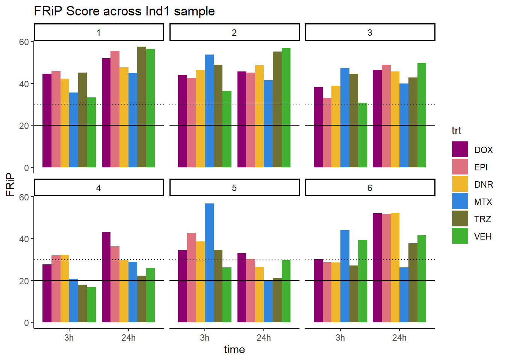
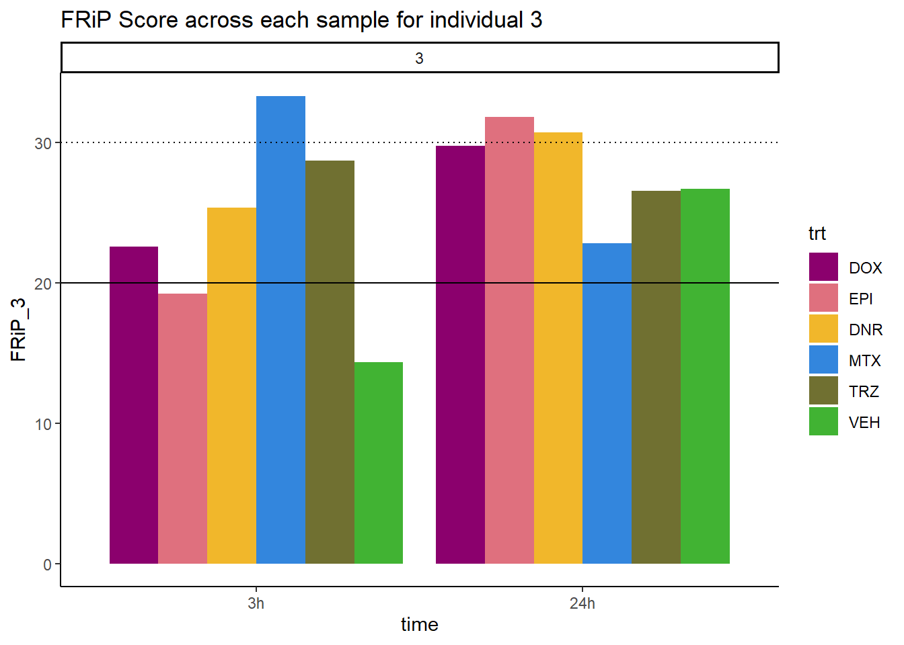
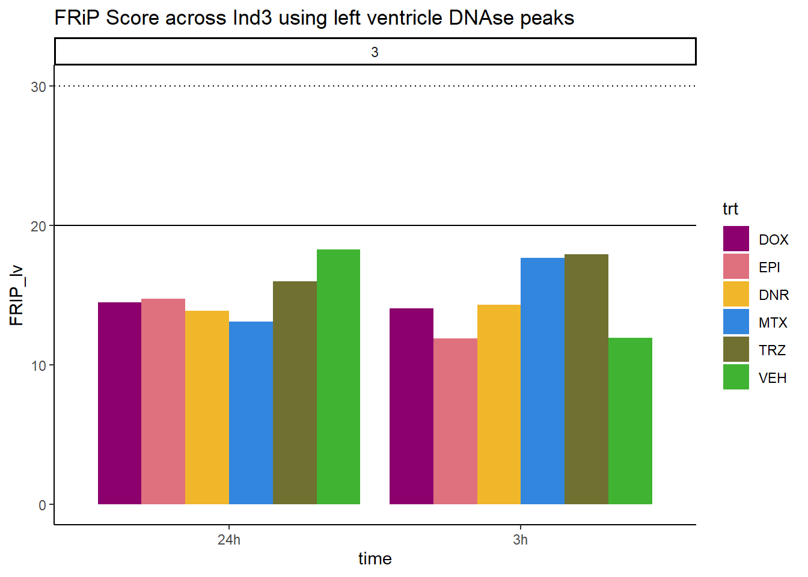
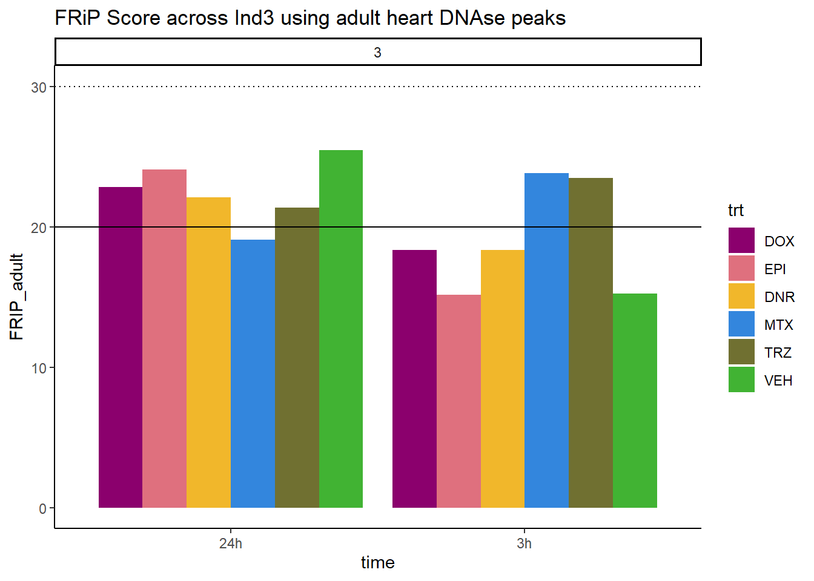
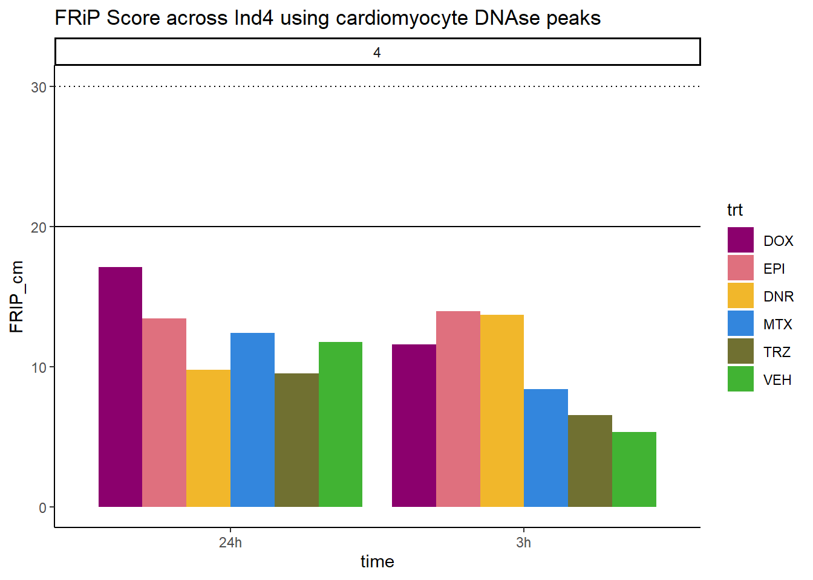
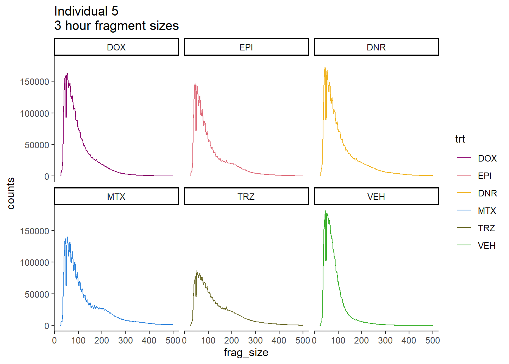
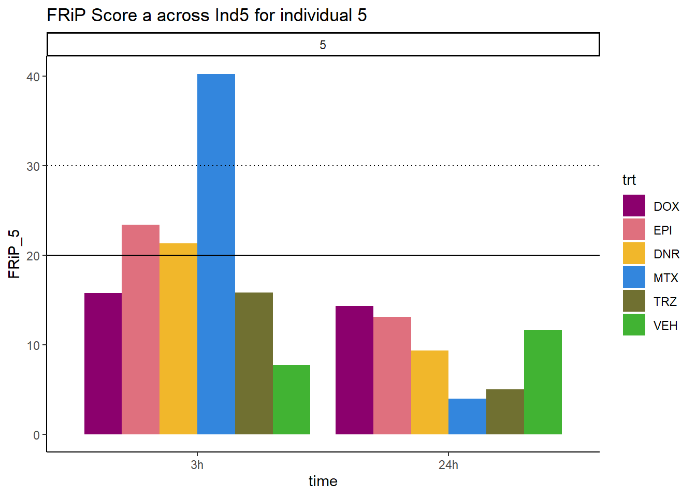
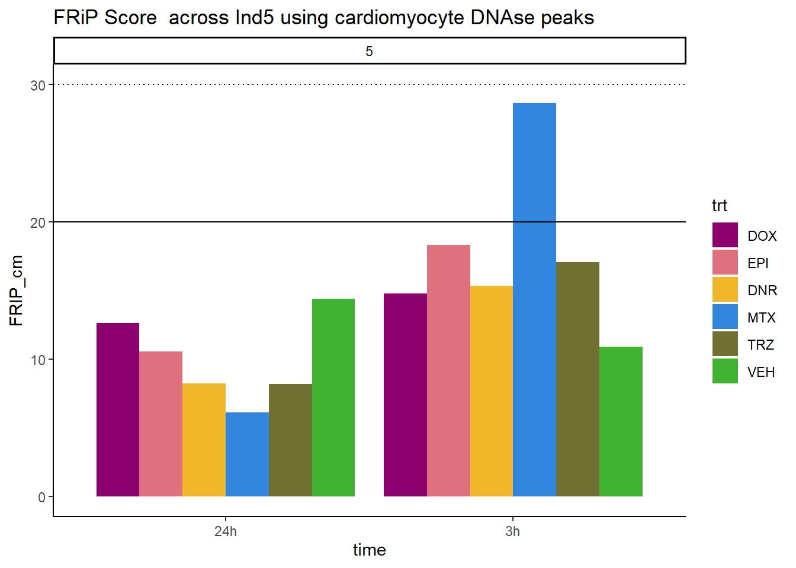
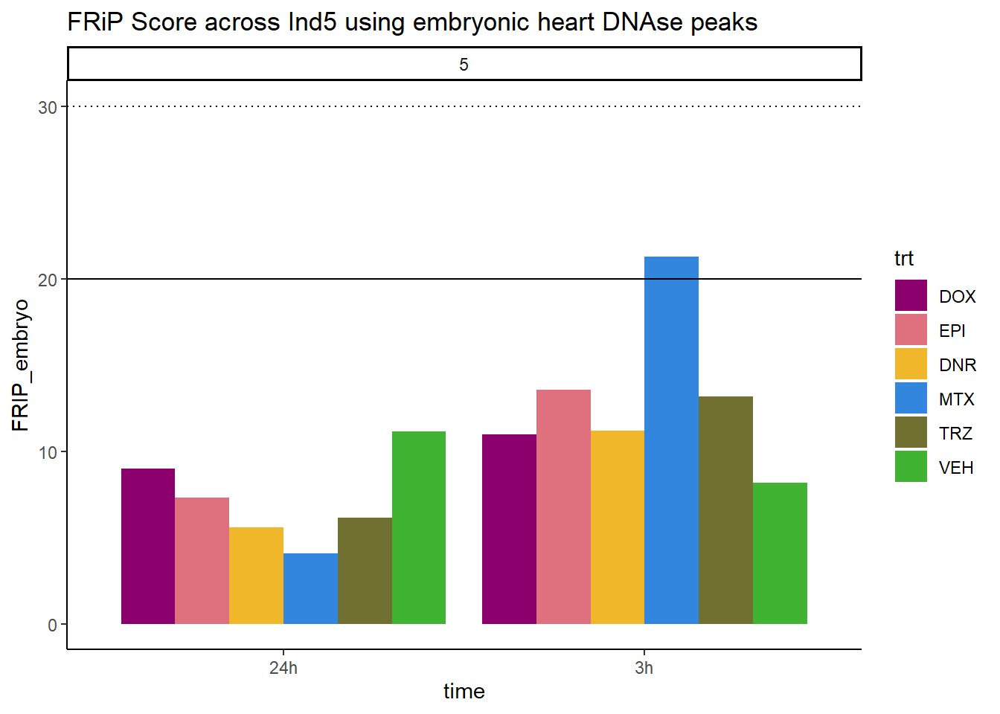
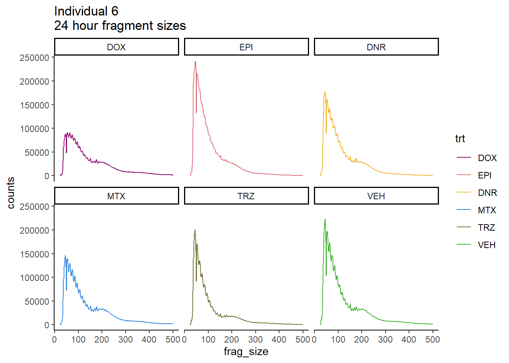

Peak_Calling
ERM
2024-03-29
Last updated: 2024-03-29
Checks: 7 0
Knit directory: ATAC_learning/
This reproducible R Markdown analysis was created with workflowr (version 1.7.1). The Checks tab describes the reproducibility checks that were applied when the results were created. The Past versions tab lists the development history.
Great! Since the R Markdown file has been committed to the Git repository, you know the exact version of the code that produced these results.
Great job! The global environment was empty. Objects defined in the global environment can affect the analysis in your R Markdown file in unknown ways. For reproduciblity it’s best to always run the code in an empty environment.
The command set.seed(20231016) was run prior to running
the code in the R Markdown file. Setting a seed ensures that any results
that rely on randomness, e.g. subsampling or permutations, are
reproducible.
Great job! Recording the operating system, R version, and package versions is critical for reproducibility.
Nice! There were no cached chunks for this analysis, so you can be confident that you successfully produced the results during this run.
Great job! Using relative paths to the files within your workflowr project makes it easier to run your code on other machines.
Great! You are using Git for version control. Tracking code development and connecting the code version to the results is critical for reproducibility.
The results in this page were generated with repository version 0b47e3f. See the Past versions tab to see a history of the changes made to the R Markdown and HTML files.
Note that you need to be careful to ensure that all relevant files for
the analysis have been committed to Git prior to generating the results
(you can use wflow_publish or
wflow_git_commit). workflowr only checks the R Markdown
file, but you know if there are other scripts or data files that it
depends on. Below is the status of the Git repository when the results
were generated:
Ignored files:
Ignored: .RData
Ignored: .Rhistory
Ignored: .Rproj.user/
Ignored: data/All_merged_peaks.tsv
Ignored: data/DEG_toplist_sep_n45.RDS
Ignored: data/FRiP_first_run.txt
Ignored: data/Frip_1_reads.csv
Ignored: data/Frip_2_reads.csv
Ignored: data/Frip_3_reads.csv
Ignored: data/Frip_4_reads.csv
Ignored: data/Frip_5_reads.csv
Ignored: data/Frip_6_reads.csv
Ignored: data/Ind1_75DA24h_dedup_peaks.csv
Ignored: data/Ind1_TSS_peaks.RDS
Ignored: data/Ind1_firstfragment_files.txt
Ignored: data/Ind1_fragment_files.txt
Ignored: data/Ind1_peaks_list.RDS
Ignored: data/Ind1_summary.txt
Ignored: data/Ind2_TSS_peaks.RDS
Ignored: data/Ind2_fragment_files.txt
Ignored: data/Ind2_peaks_list.RDS
Ignored: data/Ind2_summary.txt
Ignored: data/Ind3_TSS_peaks.RDS
Ignored: data/Ind3_fragment_files.txt
Ignored: data/Ind3_peaks_list.RDS
Ignored: data/Ind3_summary.txt
Ignored: data/Ind4_79B24h_dedup_peaks.csv
Ignored: data/Ind4_TSS_peaks.RDS
Ignored: data/Ind4_V24h_fraglength.txt
Ignored: data/Ind4_fragment_files.txt
Ignored: data/Ind4_fragment_filesN.txt
Ignored: data/Ind4_peaks_list.RDS
Ignored: data/Ind4_summary.txt
Ignored: data/Ind5_TSS_peaks.RDS
Ignored: data/Ind5_fragment_files.txt
Ignored: data/Ind5_fragment_filesN.txt
Ignored: data/Ind5_peaks_list.RDS
Ignored: data/Ind5_summary.txt
Ignored: data/Ind6_TSS_peaks.RDS
Ignored: data/Ind6_fragment_files.txt
Ignored: data/Ind6_peaks_list.RDS
Ignored: data/Ind6_summary.txt
Ignored: data/all_TSSE_scores.RDS
Ignored: data/aln_run1_results.txt
Ignored: data/anno_ind1_DA24h.RDS
Ignored: data/anno_ind4_V24h.RDS
Ignored: data/background_n45_he_peaks.RDS
Ignored: data/cardiac_muscle_FRIP.csv
Ignored: data/cardiomyocyte_FRIP.csv
Ignored: data/cormotif_full_4_run.RDS
Ignored: data/cormotif_full_4_run_he.RDS
Ignored: data/cormotif_full_6_run.RDS
Ignored: data/cormotif_full_6_run_he.RDS
Ignored: data/cormotif_probability_45_list.csv
Ignored: data/cormotif_probability_45_list_he.csv
Ignored: data/cormotif_probability_all_6_list.csv
Ignored: data/cormotif_probability_all_6_list_he.csv
Ignored: data/embryo_heart_FRIP.csv
Ignored: data/filt_Peaks_efit2.RDS
Ignored: data/filt_Peaks_efit2_bl.RDS
Ignored: data/filt_Peaks_efit2_n45.RDS
Ignored: data/first_Peaksummarycounts.csv
Ignored: data/first_run_frag_counts.txt
Ignored: data/full_bedfiles/
Ignored: data/high_conf_peak_counts.csv
Ignored: data/high_conf_peak_counts.txt
Ignored: data/high_conf_peaks_bl_counts.txt
Ignored: data/high_conf_peaks_counts.txt
Ignored: data/ind1_DA24hpeaks.RDS
Ignored: data/ind1_TSSE.RDS
Ignored: data/ind2_TSSE.RDS
Ignored: data/ind3_TSSE.RDS
Ignored: data/ind4_TSSE.RDS
Ignored: data/ind4_V24hpeaks.RDS
Ignored: data/ind5_TSSE.RDS
Ignored: data/ind6_TSSE.RDS
Ignored: data/initial_complete_stats_run1.txt
Ignored: data/left_ventricle_FRIP.csv
Ignored: data/mergedPeads.gff
Ignored: data/mergedPeaks.gff
Ignored: data/motif_list_full
Ignored: data/motif_list_n45
Ignored: data/motif_list_n45.RDS
Ignored: data/multiqc_fastqc_run1.txt
Ignored: data/multiqc_fastqc_run2.txt
Ignored: data/multiqc_genestat_run1.txt
Ignored: data/multiqc_genestat_run2.txt
Ignored: data/my_hc_filt_counts.RDS
Ignored: data/my_hc_filt_counts_n45.RDS
Ignored: data/n45_bedfiles/
Ignored: data/peakAnnoList_1.RDS
Ignored: data/peakAnnoList_2.RDS
Ignored: data/peakAnnoList_24_full.RDS
Ignored: data/peakAnnoList_24_n45.RDS
Ignored: data/peakAnnoList_3.RDS
Ignored: data/peakAnnoList_3_full.RDS
Ignored: data/peakAnnoList_3_n45.RDS
Ignored: data/peakAnnoList_4.RDS
Ignored: data/peakAnnoList_5.RDS
Ignored: data/peakAnnoList_6.RDS
Ignored: data/peakAnnoList_full_motif.RDS
Ignored: data/peakAnnoList_n45_motif.RDS
Ignored: data/siglist_full.RDS
Ignored: data/siglist_n45.RDS
Ignored: data/toplist_6.RDS
Ignored: data/toplist_full.RDS
Ignored: data/toplist_full_DAR_6.RDS
Ignored: data/toplist_n45.RDS
Ignored: data/trimmed_seq_length.csv
Ignored: data/unclassified_full_set_peaks.RDS
Ignored: data/unclassified_n45_set_peaks.RDS
Ignored: trimmed_Ind1_75DA24h_S7.nodup.splited.bam/
Untracked files:
Untracked: Firstcorr plotATAC.pdf
Untracked: IND1_2_3_6_corrplot.pdf
Untracked: analysis/my_hc_filt_counts.csv
Untracked: code/IGV_snapshot_code.R
Untracked: code/TSSE.R
Untracked: code/corMotifcustom.R
Untracked: code/just_for_Fun.R
Untracked: code/toplist_assembly.R
Untracked: lcpm_filtered_corplot.pdf
Untracked: log2cpmfragcount.pdf
Untracked: output/cormotif_probability_45_list.csv
Untracked: output/cormotif_probability_all_6_list.csv
Untracked: splited/
Untracked: trimmed_Ind1_75DA24h_S7.nodup.fragment.size.distribution.pdf
Untracked: trimmed_Ind1_75DA3h_S1.nodup.fragment.size.distribution.pdf
Note that any generated files, e.g. HTML, png, CSS, etc., are not included in this status report because it is ok for generated content to have uncommitted changes.
These are the previous versions of the repository in which changes were
made to the R Markdown (analysis/Peak_calling.Rmd) and HTML
(docs/Peak_calling.html) files. If you’ve configured a
remote Git repository (see ?wflow_git_remote), click on the
hyperlinks in the table below to view the files as they were in that
past version.
| File | Version | Author | Date | Message |
|---|---|---|---|---|
| Rmd | 0b47e3f | reneeisnowhere | 2024-03-29 | updates to code |
| html | 904fdbf | reneeisnowhere | 2024-03-19 | Build site. |
| Rmd | f22ccc1 | reneeisnowhere | 2024-03-19 | adding Frips |
| Rmd | cf2d406 | reneeisnowhere | 2024-03-19 | adding cormotif |
| html | faa6c5b | reneeisnowhere | 2024-03-11 | Build site. |
| Rmd | 6df7f0c | reneeisnowhere | 2024-03-11 | adjusting INd624h tss plot and adding Frip |
| html | 30e5df3 | reneeisnowhere | 2024-03-08 | Build site. |
| Rmd | 141a8a4 | reneeisnowhere | 2024-03-08 | wflow_publish("analysis/Peak_calling.Rmd") |
| html | 2bf37aa | reneeisnowhere | 2024-03-06 | Build site. |
| Rmd | 2ffc80a | reneeisnowhere | 2024-03-06 | updates to peak calling |
| html | 8999d6a | reneeisnowhere | 2024-03-04 | Build site. |
| Rmd | 4b83ab1 | reneeisnowhere | 2024-03-04 | adding in read progression |
| html | 9a1e500 | reneeisnowhere | 2024-03-04 | Build site. |
| Rmd | d61bef5 | reneeisnowhere | 2024-03-04 | updating Peak info |
| html | 8ff3334 | reneeisnowhere | 2024-03-04 | Build site. |
| Rmd | 05933d7 | reneeisnowhere | 2024-03-04 | updates to Ind4 and Ind5 fragment lengths, beginning Peak analysis |
| html | 3538b64 | reneeisnowhere | 2024-03-01 | Build site. |
| Rmd | 3a404bd | reneeisnowhere | 2024-03-01 | adding basic graphs of reads and reordering others |
| html | 0cced72 | reneeisnowhere | 2024-02-29 | Build site. |
| Rmd | 6e496d2 | reneeisnowhere | 2024-02-29 | adding fragment files from all samples |
| html | 4bfdef9 | reneeisnowhere | 2024-02-27 | Build site. |
| Rmd | 0a26679 | reneeisnowhere | 2024-02-27 | adding in the the reads data |
| html | 3d2aa7b | reneeisnowhere | 2024-02-27 | Build site. |
| Rmd | 1a8126f | reneeisnowhere | 2024-02-27 | adding the peak-calling files |
library(tidyverse)
# library(ggsignif)
# library(cowplot)
# library(ggpubr)
# library(scales)
# library(sjmisc)
library(kableExtra)
# library(broom)
# library(biomaRt)
library(RColorBrewer)
# library(gprofiler2)
# library(qvalue)
library(ChIPseeker)
library("TxDb.Hsapiens.UCSC.hg38.knownGene")
library("org.Hs.eg.db")
library(ATACseqQC)
library(rtracklayer)
# library(motifStack)
library(ATACseqQC)
library(TxDb.Hsapiens.UCSC.hg38.knownGene)
library(BSgenome.Hsapiens.UCSC.hg38)
library(MotifDb)
library(ChIPpeakAnno)drug_pal_fac <- c("#8B006D","#DF707E","#F1B72B", "#3386DD","#707031","#41B333")
txdb <- TxDb.Hsapiens.UCSC.hg38.knownGene
loadFile_peakCall <- function(){
file <- choose.files()
file <- readPeakFile(file, header = FALSE)
return(file)
}
prepGRangeObj <- function(seek_object){
seek_object$Peaks = seek_object$V4
seek_object$level = seek_object$V5
seek_object$V4 = seek_object$V5 = NULL
return(seek_object)
}
TSS = getBioRegion(TxDb=txdb, upstream=2000, downstream=2000, by = "gene",
type = "start_site")
# ind4_V24hpeaks <- readRDS("data/ind4_V24hpeaks.RDS")
# ind1_DA24hpeaks <- readRDS("data/ind1_DA24hpeaks.RDS")
# anno_ind4_V24h <- readRDS("data/anno_ind4_V24h.RDS")
# anno_ind1_DA24h <- readRDS("data/anno_ind1_DA24h.RDS")
Ind1_summary <- read.csv("data/Ind1_summary.txt", row.names = 1) %>%
rename(X1="sample",X2="reads",X3="mapped")
Ind2_summary <- read.csv("data/Ind2_summary.txt", row.names = 1)%>%
rename(X1="sample",X2="reads",X3="mapped")
Ind3_summary <- read.csv("data/Ind3_summary.txt", row.names = 1)%>%
rename(X1="sample",X2="reads",X3="mapped")
Ind4_summary <- read.csv("data/Ind4_summary.txt", row.names = 1)%>%
rename(X1="sample",X2="reads",X3="mapped")
Ind5_summary <- read.csv("data/Ind5_summary.txt", row.names = 1)%>%
rename(X1="sample",X2="reads",X3="mapped")
Ind6_summary <- read.csv("data/Ind6_summary.txt", row.names = 1)%>%
rename(X1="sample",X2="reads",X3="mapped")This specific page so far contains the QC analysis after calling peaks using MACS2.
Primary scripts used for ATAC data preprocesing will be linked here in the future:
Currently the steps were are as follows:
Basic Fastqc followed by adapter trimming and Fastqc analysis on the leftover fragments.
Trimmed reads were aligned to the hg38 human genome.
Mitochondrial reads (chrM) were removed
samtools was used to removed non-paired, discordantly paired, and multi-mapped reads from the .bam.
Markduplicates function from Picard was used to mark optical and PCR duplicates, with samtools used to remove these reads using the flag -F 1024.
MACS2 was used to call peaks, with QC of the peak files below.
Initial read summary is found at this LINK
Individual 1 fragment files:
Ind1_frag_files <- read.csv("data/Ind1_fragment_files.txt", row.names = 1)
Ind1_firstfrag_files <- read.csv("data/Ind1_firstfragment_files.txt", row.names = 1)
Ind1_frag_files %>%
mutate(trt=factor(trt, levels=c("DX","E","DA","M","T","V"), labels = c("DOX","EPI","DNR","MTX","TRZ","VEH"))) %>%
dplyr::filter(time =="3h") %>%
ggplot(., aes(y=counts, x=frag_size, group=trt))+
# geom_line(aes(col=trt, alpha = 0.5, linewidth=1 ))+
geom_line(aes(col=trt))+
ggtitle("Individual 1\n3 hour fragment sizes")+
theme_classic()+
facet_wrap(~trt)+
scale_color_manual(values=drug_pal_fac)+
coord_cartesian(ylim=c(0,300000))
Ind1_firstfrag_files %>%
mutate(trt=factor(trt, levels=c("DX","E","DA","M","T","V"), labels = c("DOX","EPI","DNR","MTX","TRZ","VEH"))) %>%
dplyr::filter(time =="3h") %>%
ggplot(., aes(y=(counts), x=(frag_size), group=trt))+
# geom_line(aes(col=trt, alpha = 0.5, linewidth=1 ))+
geom_line(aes(col=trt))+
ggtitle("Individual 1\n3 hour fragment sizes BEFORE filtering")+
theme_classic()+
facet_wrap(~trt)+
scale_color_manual(values=drug_pal_fac)+
coord_cartesian(xlim=c(0,1000))
#
Ind1_frag_files %>%
mutate(trt=factor(trt, levels=c("DX","E","DA","M","T","V"), labels = c("DOX","EPI","DNR","MTX","TRZ","VEH"))) %>%
dplyr::filter(time =="24h") %>%
ggplot(., aes(y=(counts), x=frag_size, group=trt))+
geom_line(aes(col=trt))+
ggtitle("Individual 1\n24 hour fragment sizes")+
theme_classic()+
facet_wrap(~trt)+
scale_color_manual(values=drug_pal_fac)#+
| Version | Author | Date |
|---|---|---|
| 2bf37aa | reneeisnowhere | 2024-03-06 |
# coord_cartesian(ylim=c(0,300000))
Ind1_firstfrag_files %>%
mutate(trt=factor(trt, levels=c("DX","E","DA","M","T","V"), labels = c("DOX","EPI","DNR","MTX","TRZ","VEH"))) %>%
dplyr::filter(time =="24h") %>%
ggplot(., aes(y=(counts), x=(frag_size), group=trt))+
# geom_line(aes(col=trt, alpha = 0.5, linewidth=1 ))+
geom_line(aes(col=trt))+
ggtitle("Individual 1\n24 hour fragment sizes BEFORE filtering")+
theme_classic()+
facet_wrap(~trt)+
scale_color_manual(values=drug_pal_fac)+
coord_cartesian(xlim=c(0,1000))
# FRiP Individual 1
cardiac_muscle_Frip <- read.csv("data/cardiac_muscle_FRIP.csv", row.names = 1)
cardiomyocyte_Frip <- read.csv("data/cardiomyocyte_FRIP.csv", row.names = 1)
left_ventricle_Frip <- read.csv("data/left_ventricle_FRIP.csv", row.names = 1)
embryo_heart_Frip <- read.csv("data/embryo_heart_FRIP.csv", row.names = 1)
# Ind1_summary <- read.csv("data/Ind1_summary.txt", row.names = 1) %>%
# dplyr::rename("sample"=X1,"reads"=X2,"mapped"=X3)
# Frip_1_reads <- Ind1_frip %>%
# rename(X1 ="sample", X2 ="counts_in_peaks") %>%
# separate(sample, into= c(NA,NA,NA,NA,NA,NA, NA,NA,NA,NA,"indv","sample")) %>%
# full_join(Ind1_reads_summary) %>%
# mutate(FRiP_1= counts_in_peaks/dedup_reads*100)
# write.csv(Frip_1_reads,"data/Frip_1_reads.csv")
Frip_1_reads <- read.csv("data/Frip_1_reads.csv", row.names = 1)
all_frip1 <- Frip_1_reads %>%
mutate(sample=gsub("75","1_",sample)) %>%
mutate(sample = gsub("24h","_24h",sample),
sample = gsub("3h","_3h",sample)) %>%
separate(sample, into = c("indv","trt","time")) %>%
mutate(trt=factor(trt, levels=c("DX","E","DA","M","T","V"), labels = c("DOX","EPI","DNR","MTX","TRZ","VEH"))) %>%
mutate(indv=as.numeric(indv)) %>%
left_join(., (cardiac_muscle_Frip %>% mutate(trt=factor(trt, levels=c("DOX","EPI","DNR","MTX","TRZ","VEH"))))) %>%
left_join(., (left_ventricle_Frip %>% mutate(trt=factor(trt, levels=c("DOX","EPI","DNR","MTX","TRZ","VEH"))))) %>%
left_join(., (cardiomyocyte_Frip %>% mutate(trt=factor(trt, levels=c("DOX","EPI","DNR","MTX","TRZ","VEH"))))) %>%
left_join(., (embryo_heart_Frip %>% mutate(trt=factor(trt, levels=c("DOX","EPI","DNR","MTX","TRZ","VEH"))))) %>%
mutate(FRIP_embryo=embryo_counts/dedup_reads *100) %>%
mutate(FRIP_cm=cm_counts/dedup_reads*100) %>%
mutate(FRIP_lv=lv_counts/dedup_reads*100) %>%
mutate(FRIP_adult=c_muscle_counts/dedup_reads*100)
# Ind1_reads_frip <-
# Ind1_summary %>%
# separate(reads,into=c("reads",NA),sep= " ") %>%
# mutate(reads=as.numeric(reads)) %>%
# separate(mapped, into= c("mapped_reads", NA,NA, "percent_mapped_reads",NA)) %>%
# separate(sample, into=c("one","two",NA, "4","sample",NA,"seven","8")) %>%
# mutate(mapped_reads=as.numeric(mapped_reads)) %>%
# mutate(type = if_else(two=="first", "total",
# if_else(two=="noM","nuclear",
# if_else((seven == "fin"& two=="files"), "unique", "dedup"))))%>%
# dplyr::select(sample,type, reads, mapped_reads)%>%
# pivot_longer(cols=reads:mapped_reads, names_to = "read_info", values_to = "reads") %>%
# unite("type",type:read_info, sep="_") %>%
# distinct() %>%
# pivot_wider(id_cols = sample, names_from = "type", values_from = "reads") %>%
# mutate(per_nuclear_mapped = nuclear_mapped_reads/total_mapped_reads*100) %>%
# mutate(dedup_read_pairs=dedup_reads/2) %>%
# dplyr::select(sample,total_reads:nuclear_mapped_reads,per_nuclear_mapped,unique_mapped_reads,dedup_reads,dedup_read_pairs) %>%
# dplyr::select(sample, dedup_reads) %>%
Frip_1_reads %>%
mutate(sample=gsub("75","1_",sample)) %>%
mutate(sample = gsub("24h","_24h",sample),
sample = gsub("3h","_3h",sample)) %>%
separate(sample, into = c("indv","trt","time")) %>%
mutate(time=factor(time, levels = c("3h","24h"))) %>%
mutate(trt=factor(trt, levels=c("DX","E","DA","M","T","V"), labels = c("DOX","EPI","DNR","MTX","TRZ","VEH"))) %>%
ggplot(., aes (x=time, y=FRiP_1, group=trt))+
geom_col(position= "dodge",aes(fill=trt))+
geom_hline(yintercept = 20)+
geom_hline(yintercept = 30,linetype=3)+
facet_wrap(~indv)+
theme_classic()+
ggtitle("FRiP Score across each sample for individual 1")+
scale_fill_manual(values=drug_pal_fac)
| Version | Author | Date |
|---|---|---|
| faa6c5b | reneeisnowhere | 2024-03-11 |
FRiP_first_run <- read.csv("data/FRiP_first_run.txt", row.names = 1)
FRiP_first_run %>%
mutate(sample=gsub("75","1_",sample)) %>%
mutate(sample=gsub("87","2_",sample)) %>%
mutate(sample=gsub("77","3_",sample)) %>%
mutate(sample=gsub("79","4_",sample)) %>%
mutate(sample=gsub("78","5_",sample)) %>%
mutate(sample=gsub("71","6_",sample)) %>%
mutate(sample = gsub("24h","_24h",sample),
sample = gsub("3h","_3h",sample)) %>%
separate(sample, into = c("indv","trt","time")) %>%
mutate(time=factor(time, levels = c("3h","24h"))) %>%
mutate(trt=factor(trt, levels=c("DX","E","DA","M","T","V"), labels = c("DOX","EPI","DNR","MTX","TRZ","VEH"))) %>%
ggplot(., aes (x=time, y=FRiP, group=trt))+
geom_col(position= "dodge",aes(fill=trt))+
geom_hline(yintercept = 20)+
geom_hline(yintercept = 30,linetype=3)+
facet_wrap(~indv)+
theme_classic()+
ggtitle("FRiP Score across Ind1 sample")+
scale_fill_manual(values=drug_pal_fac)
all_frip1 %>% ggplot(., aes (x=time, y=FRIP_cm, group=trt))+
geom_col(position= "dodge",aes(fill=trt))+
geom_hline(yintercept = 20)+
geom_hline(yintercept = 30,linetype=3)+
facet_wrap(~indv)+
theme_classic()+
ggtitle("FRiP Score across Ind1 using cardiomyocyte DNAse peaks")+
scale_fill_manual(values=drug_pal_fac)
| Version | Author | Date |
|---|---|---|
| 904fdbf | reneeisnowhere | 2024-03-19 |
all_frip1 %>% ggplot(., aes (x=time, y=FRIP_lv, group=trt))+
geom_col(position= "dodge",aes(fill=trt))+
geom_hline(yintercept = 20)+
geom_hline(yintercept = 30,linetype=3)+
facet_wrap(~indv)+
theme_classic()+
ggtitle("FRiP Score across Ind1 using left ventricle DNAse peaks")+
scale_fill_manual(values=drug_pal_fac)
| Version | Author | Date |
|---|---|---|
| 904fdbf | reneeisnowhere | 2024-03-19 |
all_frip1 %>% ggplot(., aes (x=time, y=FRIP_adult, group=trt))+
geom_col(position= "dodge",aes(fill=trt))+
geom_hline(yintercept = 20)+
geom_hline(yintercept = 30,linetype=3)+
facet_wrap(~indv)+
theme_classic()+
ggtitle("FRiP Score across Ind1 using adult heart DNAse peaks")+
scale_fill_manual(values=drug_pal_fac)
| Version | Author | Date |
|---|---|---|
| 904fdbf | reneeisnowhere | 2024-03-19 |
all_frip1 %>% ggplot(., aes (x=time, y=FRIP_embryo, group=trt))+
geom_col(position= "dodge",aes(fill=trt))+
geom_hline(yintercept = 20)+
geom_hline(yintercept = 30,linetype=3)+
facet_wrap(~indv)+
theme_classic()+
ggtitle("FRiP Score across Ind1 using embryonic heart DNAse peaks")+
scale_fill_manual(values=drug_pal_fac)
| Version | Author | Date |
|---|---|---|
| 904fdbf | reneeisnowhere | 2024-03-19 |
Horizontal line is at 20%. Individual 4 at 3 hours is not a good score. Encode recommends >30% (dotted line).
Individual 2 fragment files:
Ind2_frag_files <- read.csv("data/Ind2_fragment_files.txt", row.names = 1)
Ind2_frag_files %>%
mutate(trt=factor(trt, levels=c("DX","E","DA","M","T","V"), labels = c("DOX","EPI","DNR","MTX","TRZ","VEH"))) %>%
dplyr::filter(time =="3h") %>%
ggplot(., aes(y=counts, x=frag_size, group=trt))+
# geom_line(aes(col=trt, alpha = 0.5, linewidth=1 ))+
geom_line(aes(col=trt))+
ggtitle("Individual 2\n3 hour fragment sizes")+
theme_classic()+
facet_wrap(~trt)+
scale_color_manual(values=drug_pal_fac)
Ind2_frag_files %>%
mutate(trt=factor(trt, levels=c("DX","E","DA","M","T","V"), labels = c("DOX","EPI","DNR","MTX","TRZ","VEH"))) %>%
dplyr::filter(time =="24h") %>%
ggplot(., aes(y=counts, x=frag_size, group=trt))+
geom_line(aes(col=trt))+
ggtitle("Individual 2\n24 hour fragment sizes")+
theme_classic()+
facet_wrap(~trt)+
scale_color_manual(values=drug_pal_fac)
FRiP Individual 2
# Ind2_summary <- read.csv("data/Ind2_summary.txt", row.names = 1) %>%
# dplyr::rename("sample"=X1,"reads"=X2,"mapped"=X3)
#
# Ind2_reads_summary <-
# Ind2_summary %>%
# separate(reads,into=c("reads",NA),sep= " ") %>%
# mutate(reads=as.numeric(reads)) %>%
# separate(mapped, into= c("mapped_reads", NA,NA, "percent_mapped_reads",NA)) %>%
# separate(sample, into=c("one","two",NA, "4","sample",NA,"seven","8")) %>%
# mutate(mapped_reads=as.numeric(mapped_reads)) %>%
# mutate(type = if_else(two=="first", "total",
# if_else(two=="noM","nuclear",
# if_else((seven == "fin"& two=="files"), "unique", "dedup"))))%>%
# dplyr::select(sample,type, reads, mapped_reads)%>%
# pivot_longer(cols=reads:mapped_reads, names_to = "read_info", values_to = "reads") %>%
# unite("type",type:read_info, sep="_") %>%
# distinct() %>%
# pivot_wider(id_cols = sample, names_from = "type", values_from = "reads") %>%
# mutate(per_nuclear_mapped = nuclear_mapped_reads/total_mapped_reads*100) %>%
# mutate(dedup_read_pairs=dedup_reads/2) %>%
# dplyr::select(sample,total_reads:nuclear_mapped_reads,per_nuclear_mapped,unique_mapped_reads,dedup_reads,dedup_read_pairs) %>%
# dplyr::select(sample, dedup_reads)
# Ind2_frip <- read_delim("~/ATAC_downloads/Ind1/trimmed/Ind2_frip.txt",
# delim = "\t", escape_double = FALSE,
# col_names = FALSE, trim_ws = TRUE)
#
# Frip_2_reads <- Ind2_frip %>%
# rename(X1 ="sample", X2 ="counts_in_peaks") %>%
# separate(sample, into= c(NA,NA,NA,NA,NA,NA, NA,NA,NA,NA,"indv","sample")) %>%
# full_join(Ind2_reads_summary) %>%
# mutate(FRiP_2= counts_in_peaks/dedup_reads*100)
# write.csv(Frip_2_reads,"data/Frip_2_reads.csv")
Frip_2_reads <- read.csv("data/Frip_2_reads.csv", row.names = 1)
all_frip2 <- Frip_2_reads %>%
mutate(sample=gsub("87","2_",sample)) %>%
mutate(sample = gsub("24h","_24h",sample),
sample = gsub("3h","_3h",sample)) %>%
separate(sample, into = c("indv","trt","time")) %>%
mutate(time=factor(time, levels = c("3h","24h"))) %>%
mutate(trt=factor(trt, levels=c("DX","E","DA","M","T","V"), labels = c("DOX","EPI","DNR","MTX","TRZ","VEH"))) %>%
mutate(indv=as.numeric(indv)) %>%
left_join(., (cardiac_muscle_Frip %>% mutate(trt=factor(trt, levels=c("DOX","EPI","DNR","MTX","TRZ","VEH"))))) %>%
left_join(., (left_ventricle_Frip %>% mutate(trt=factor(trt, levels=c("DOX","EPI","DNR","MTX","TRZ","VEH"))))) %>%
left_join(., (cardiomyocyte_Frip %>% mutate(trt=factor(trt, levels=c("DOX","EPI","DNR","MTX","TRZ","VEH"))))) %>%
left_join(., (embryo_heart_Frip %>% mutate(trt=factor(trt, levels=c("DOX","EPI","DNR","MTX","TRZ","VEH"))))) %>%
mutate(FRIP_embryo=embryo_counts/dedup_reads *100) %>%
mutate(FRIP_cm=cm_counts/dedup_reads*100) %>%
mutate(FRIP_lv=lv_counts/dedup_reads*100) %>%
mutate(FRIP_adult=c_muscle_counts/dedup_reads*100)
Frip_2_reads %>%
mutate(sample=gsub("87","2_",sample)) %>%
mutate(sample = gsub("24h","_24h",sample),
sample = gsub("3h","_3h",sample)) %>%
separate(sample, into = c("indv","trt","time")) %>%
mutate(time=factor(time, levels = c("3h","24h"))) %>%
mutate(trt=factor(trt, levels=c("DX","E","DA","M","T","V"), labels = c("DOX","EPI","DNR","MTX","TRZ","VEH"))) %>%
ggplot(., aes (x=time, y=FRiP_2, group=trt))+
geom_col(position= "dodge",aes(fill=trt))+
geom_hline(yintercept = 20)+
geom_hline(yintercept = 30,linetype=3)+
facet_wrap(~indv)+
theme_classic()+
ggtitle("FRiP Score across each sample for individual 2")+
scale_fill_manual(values=drug_pal_fac)
| Version | Author | Date |
|---|---|---|
| faa6c5b | reneeisnowhere | 2024-03-11 |
all_frip2 %>% ggplot(., aes (x=time, y=FRIP_cm, group=trt))+
geom_col(position= "dodge",aes(fill=trt))+
geom_hline(yintercept = 20)+
geom_hline(yintercept = 30,linetype=3)+
facet_wrap(~indv)+
theme_classic()+
ggtitle("FRiP Score across Ind2 using cardiomyocyte DNAse peaks")+
scale_fill_manual(values=drug_pal_fac)
| Version | Author | Date |
|---|---|---|
| 904fdbf | reneeisnowhere | 2024-03-19 |
all_frip2 %>% ggplot(., aes (x=time, y=FRIP_lv, group=trt))+
geom_col(position= "dodge",aes(fill=trt))+
geom_hline(yintercept = 20)+
geom_hline(yintercept = 30,linetype=3)+
facet_wrap(~indv)+
theme_classic()+
ggtitle("FRiP Score across Ind2 using left ventricle DNAse peaks")+
scale_fill_manual(values=drug_pal_fac)
| Version | Author | Date |
|---|---|---|
| 904fdbf | reneeisnowhere | 2024-03-19 |
all_frip2 %>% ggplot(., aes (x=time, y=FRIP_adult, group=trt))+
geom_col(position= "dodge",aes(fill=trt))+
geom_hline(yintercept = 20)+
geom_hline(yintercept = 30,linetype=3)+
facet_wrap(~indv)+
theme_classic()+
ggtitle("FRiP Score across Ind2 using adult heart DNAse peaks")+
scale_fill_manual(values=drug_pal_fac)
| Version | Author | Date |
|---|---|---|
| 904fdbf | reneeisnowhere | 2024-03-19 |
all_frip2 %>% ggplot(., aes (x=time, y=FRIP_embryo, group=trt))+
geom_col(position= "dodge",aes(fill=trt))+
geom_hline(yintercept = 20)+
geom_hline(yintercept = 30,linetype=3)+
facet_wrap(~indv)+
theme_classic()+
ggtitle("FRiP Score across Ind2 using embryonic heart DNAse peaks")+
scale_fill_manual(values=drug_pal_fac)
| Version | Author | Date |
|---|---|---|
| 904fdbf | reneeisnowhere | 2024-03-19 |
Individual 3 fragment files:
Ind3_frag_files <- read.csv("data/Ind3_fragment_files.txt", row.names = 1)
Ind3_frag_files %>%
mutate(trt=factor(trt, levels=c("DX","E","DA","M","T","V"), labels = c("DOX","EPI","DNR","MTX","TRZ","VEH"))) %>%
dplyr::filter(time =="3h") %>%
ggplot(., aes(y=counts, x=frag_size, group=trt))+
# geom_line(aes(col=trt, alpha = 0.5, linewidth=1 ))+
geom_line(aes(col=trt))+
ggtitle("Individual 3\n3 hour fragment sizes")+
theme_classic()+
facet_wrap(~trt)+
scale_color_manual(values=drug_pal_fac)
Ind3_frag_files %>%
mutate(trt=factor(trt, levels=c("DX","E","DA","M","T","V"), labels = c("DOX","EPI","DNR","MTX","TRZ","VEH"))) %>%
dplyr::filter(time =="24h") %>%
ggplot(., aes(y=counts, x=frag_size, group=trt))+
geom_line(aes(col=trt))+
ggtitle("Individual 3\n24 hour fragment sizes")+
theme_classic()+
facet_wrap(~trt)+
scale_color_manual(values=drug_pal_fac)
FRiP Individual 3
# Ind3_summary <- read.csv("data/Ind3_summary.txt", row.names = 1) %>%
# dplyr::rename("sample"=X1,"reads"=X2,"mapped"=X3)
#
# Ind3_reads_summary <-
# Ind3_summary %>%
# separate(reads,into=c("reads",NA),sep= " ") %>%
# mutate(reads=as.numeric(reads)) %>%
# separate(mapped, into= c("mapped_reads", NA,NA, "percent_mapped_reads",NA)) %>%
# separate(sample, into=c("one","two",NA, "4","sample",NA,"seven","8")) %>%
# mutate(mapped_reads=as.numeric(mapped_reads)) %>%
# mutate(type = if_else(two=="first", "total",
# if_else(two=="noM","nuclear",
# if_else((seven == "fin"& two=="files"), "unique", "dedup"))))%>%
# dplyr::select(sample,type, reads, mapped_reads)%>%
# pivot_longer(cols=reads:mapped_reads, names_to = "read_info", values_to = "reads") %>%
# unite("type",type:read_info, sep="_") %>%
# distinct() %>%
# pivot_wider(id_cols = sample, names_from = "type", values_from = "reads") %>%
# mutate(per_nuclear_mapped = nuclear_mapped_reads/total_mapped_reads*100) %>%
# mutate(dedup_read_pairs=dedup_reads/2) %>%
# dplyr::select(sample,total_reads:nuclear_mapped_reads,per_nuclear_mapped,unique_mapped_reads,dedup_reads,dedup_read_pairs) %>%
# dplyr::select(sample, dedup_reads)
# Ind3_frip <- read_delim("~/ATAC_downloads/Ind1/trimmed/Ind3_frip.txt",
# delim = "\t", escape_double = FALSE,
# col_names = FALSE, trim_ws = TRUE)
#
# Frip_3_reads <- Ind3_frip %>%
# rename(X1 ="sample", X2 ="counts_in_peaks") %>%
# separate(sample, into= c(NA,NA,NA,NA,NA,NA, NA,NA,NA,NA,"indv","sample")) %>%
# full_join(Ind3_reads_summary) %>%
# mutate(FRiP_3= counts_in_peaks/dedup_reads*100)
# write.csv(Frip_3_reads,"data/Frip_3_reads.csv")
Frip_3_reads <- read.csv("data/Frip_3_reads.csv", row.names = 1)
all_frip3 <- Frip_3_reads %>%
mutate(sample=gsub("77","3_",sample)) %>%
mutate(sample = gsub("24h","_24h",sample),
sample = gsub("3h","_3h",sample)) %>%
separate(sample, into = c("indv","trt","time")) %>%
mutate(time=factor(time, levels = c("3h","24h"))) %>%
mutate(trt=factor(trt, levels=c("DX","E","DA","M","T","V"), labels = c("DOX","EPI","DNR","MTX","TRZ","VEH"))) %>%
mutate(indv=as.numeric(indv)) %>%
left_join(., (cardiac_muscle_Frip %>% mutate(trt=factor(trt, levels=c("DOX","EPI","DNR","MTX","TRZ","VEH"))))) %>%
left_join(., (left_ventricle_Frip %>% mutate(trt=factor(trt, levels=c("DOX","EPI","DNR","MTX","TRZ","VEH"))))) %>%
left_join(., (cardiomyocyte_Frip %>% mutate(trt=factor(trt, levels=c("DOX","EPI","DNR","MTX","TRZ","VEH"))))) %>%
left_join(., (embryo_heart_Frip %>% mutate(trt=factor(trt, levels=c("DOX","EPI","DNR","MTX","TRZ","VEH"))))) %>%
mutate(FRIP_embryo=embryo_counts/dedup_reads *100) %>%
mutate(FRIP_cm=cm_counts/dedup_reads*100) %>%
mutate(FRIP_lv=lv_counts/dedup_reads*100) %>%
mutate(FRIP_adult=c_muscle_counts/dedup_reads*100)
Frip_3_reads %>%
mutate(sample=gsub("77","3_",sample)) %>%
mutate(sample = gsub("24h","_24h",sample),
sample = gsub("3h","_3h",sample)) %>%
separate(sample, into = c("indv","trt","time")) %>%
mutate(time=factor(time, levels = c("3h","24h"))) %>%
mutate(trt=factor(trt, levels=c("DX","E","DA","M","T","V"), labels = c("DOX","EPI","DNR","MTX","TRZ","VEH"))) %>%
ggplot(., aes (x=time, y=FRiP_3, group=trt))+
geom_col(position= "dodge",aes(fill=trt))+
geom_hline(yintercept = 20)+
geom_hline(yintercept = 30,linetype=3)+
facet_wrap(~indv)+
theme_classic()+
ggtitle("FRiP Score across each sample for individual 3")+
scale_fill_manual(values=drug_pal_fac)
| Version | Author | Date |
|---|---|---|
| faa6c5b | reneeisnowhere | 2024-03-11 |
all_frip3 %>% ggplot(., aes (x=time, y=FRIP_cm, group=trt))+
geom_col(position= "dodge",aes(fill=trt))+
geom_hline(yintercept = 20)+
geom_hline(yintercept = 30,linetype=3)+
facet_wrap(~indv)+
theme_classic()+
ggtitle("FRiP Score across Ind3 using cardiomyocyte DNAse peaks")+
scale_fill_manual(values=drug_pal_fac)
| Version | Author | Date |
|---|---|---|
| 904fdbf | reneeisnowhere | 2024-03-19 |
all_frip3 %>% ggplot(., aes (x=time, y=FRIP_lv, group=trt))+
geom_col(position= "dodge",aes(fill=trt))+
geom_hline(yintercept = 20)+
geom_hline(yintercept = 30,linetype=3)+
facet_wrap(~indv)+
theme_classic()+
ggtitle("FRiP Score across Ind3 using left ventricle DNAse peaks")+
scale_fill_manual(values=drug_pal_fac)
| Version | Author | Date |
|---|---|---|
| 904fdbf | reneeisnowhere | 2024-03-19 |
all_frip3 %>% ggplot(., aes (x=time, y=FRIP_adult, group=trt))+
geom_col(position= "dodge",aes(fill=trt))+
geom_hline(yintercept = 20)+
geom_hline(yintercept = 30,linetype=3)+
facet_wrap(~indv)+
theme_classic()+
ggtitle("FRiP Score across Ind3 using adult heart DNAse peaks")+
scale_fill_manual(values=drug_pal_fac)
| Version | Author | Date |
|---|---|---|
| 904fdbf | reneeisnowhere | 2024-03-19 |
all_frip3 %>% ggplot(., aes (x=time, y=FRIP_embryo, group=trt))+
geom_col(position= "dodge",aes(fill=trt))+
geom_hline(yintercept = 20)+
geom_hline(yintercept = 30,linetype=3)+
facet_wrap(~indv)+
theme_classic()+
ggtitle("FRiP Score across Ind3 using embryonic heart DNAse peaks")+
scale_fill_manual(values=drug_pal_fac)
| Version | Author | Date |
|---|---|---|
| 904fdbf | reneeisnowhere | 2024-03-19 |
Individual 4 fragment files:
Ind4_frag_files <- read.csv("data/Ind4_fragment_files.txt", row.names = 1)
Ind4_frag_files %>%
mutate(trt=factor(trt, levels=c("DX","E","DA","M","T","V"), labels = c("DOX","EPI","DNR","MTX","TRZ","VEH"))) %>%
dplyr::filter(time =="3h") %>%
ggplot(., aes(y=counts, x=frag_size, group=trt))+
geom_line(aes(col=trt ))+
ggtitle("Individual 4\n3 hour fragment sizes")+
theme_classic()+
facet_wrap(~trt)+
scale_color_manual(values=drug_pal_fac)
Ind4_frag_files %>%
mutate(trt=factor(trt, levels=c("DX","E","DA","M","T","V"), labels = c("DOX","EPI","DNR","MTX","TRZ","VEH"))) %>%
dplyr::filter(time =="24h") %>%
ggplot(., aes(y=counts, x=frag_size, group=trt))+
geom_line(aes(col=trt ))+
ggtitle("Individual 4\n24 hour fragment sizes")+
theme_classic()+
facet_wrap(~trt)+
scale_color_manual(values=drug_pal_fac)
FRiP Individual 4
# Ind4_summary <- read.csv("data/Ind4_summary.txt", row.names = 1) %>%
# dplyr::rename("sample"=X1,"reads"=X2,"mapped"=X3)
#
# Ind4_reads_summary <-
# Ind4_summary %>%
# separate(reads,into=c("reads",NA),sep= " ") %>%
# mutate(reads=as.numeric(reads)) %>%
# separate(mapped, into= c("mapped_reads", NA,NA, "percent_mapped_reads",NA)) %>%
# separate(sample, into=c("one","two",NA, "4","sample",NA,"seven","8")) %>%
# mutate(mapped_reads=as.numeric(mapped_reads)) %>%
# mutate(type = if_else(two=="first", "total",
# if_else(two=="noM","nuclear",
# if_else((seven == "fin"& two=="files"), "unique", "dedup"))))%>%
# dplyr::select(sample,type, reads, mapped_reads)%>%
# pivot_longer(cols=reads:mapped_reads, names_to = "read_info", values_to = "reads") %>%
# unite("type",type:read_info, sep="_") %>%
# distinct() %>%
# pivot_wider(id_cols = sample, names_from = "type", values_from = "reads") %>%
# mutate(per_nuclear_mapped = nuclear_mapped_reads/total_mapped_reads*100) %>%
# mutate(dedup_read_pairs=dedup_reads/2) %>%
# dplyr::select(sample,total_reads:nuclear_mapped_reads,per_nuclear_mapped,unique_mapped_reads,dedup_reads,dedup_read_pairs) %>%
# dplyr::select(sample, dedup_reads)
# Ind4_frip <- read_delim("~/ATAC_downloads/Ind1/trimmed/Ind4_frip.txt",
# delim = "\t", escape_double = FALSE,
# col_names = FALSE, trim_ws = TRUE)
#
# Frip_4_reads <- Ind4_frip %>%
# rename(X1 ="sample", X2 ="counts_in_peaks") %>%
# separate(sample, into= c(NA,NA,NA,NA,NA,NA, NA,NA,NA,NA,"indv","sample")) %>%
# full_join(Ind4_reads_summary) %>%
# mutate(FRiP_4= counts_in_peaks/dedup_reads*100)
# write.csv(Frip_4_reads,"data/Frip_4_reads.csv")
Frip_4_reads <- read.csv("data/Frip_4_reads.csv", row.names = 1)
all_frip4 <- Frip_4_reads %>%
mutate(sample=gsub("79","4_",sample)) %>%
mutate(sample = gsub("24h","_24h",sample),
sample = gsub("3h","_3h",sample)) %>%
separate(sample, into = c("indv","trt","time")) %>%
mutate(time=factor(time, levels = c("3h","24h"))) %>%
mutate(trt=factor(trt, levels=c("DX","E","DA","M","T","V"), labels = c("DOX","EPI","DNR","MTX","TRZ","VEH"))) %>%
mutate(indv=as.numeric(indv)) %>%
left_join(., (cardiac_muscle_Frip %>% mutate(trt=factor(trt, levels=c("DOX","EPI","DNR","MTX","TRZ","VEH"))))) %>%
left_join(., (left_ventricle_Frip %>% mutate(trt=factor(trt, levels=c("DOX","EPI","DNR","MTX","TRZ","VEH"))))) %>%
left_join(., (cardiomyocyte_Frip %>% mutate(trt=factor(trt, levels=c("DOX","EPI","DNR","MTX","TRZ","VEH"))))) %>%
left_join(., (embryo_heart_Frip %>% mutate(trt=factor(trt, levels=c("DOX","EPI","DNR","MTX","TRZ","VEH"))))) %>%
mutate(FRIP_embryo=embryo_counts/dedup_reads *100) %>%
mutate(FRIP_cm=cm_counts/dedup_reads*100) %>%
mutate(FRIP_lv=lv_counts/dedup_reads*100) %>%
mutate(FRIP_adult=c_muscle_counts/dedup_reads*100)
Frip_4_reads %>%
mutate(sample=gsub("79","4_",sample)) %>%
mutate(sample = gsub("24h","_24h",sample),
sample = gsub("3h","_3h",sample)) %>%
separate(sample, into = c("indv","trt","time")) %>%
mutate(time=factor(time, levels = c("3h","24h"))) %>%
mutate(trt=factor(trt, levels=c("DX","E","DA","M","T","V"), labels = c("DOX","EPI","DNR","MTX","TRZ","VEH"))) %>%
ggplot(., aes (x=time, y=FRiP_4, group=trt))+
geom_col(position= "dodge",aes(fill=trt))+
geom_hline(yintercept = 20)+
geom_hline(yintercept = 30,linetype=3)+
facet_wrap(~indv)+
theme_classic()+
ggtitle("FRiP Score across each sample for individual 4")+
scale_fill_manual(values=drug_pal_fac)
| Version | Author | Date |
|---|---|---|
| faa6c5b | reneeisnowhere | 2024-03-11 |
all_frip4 %>% ggplot(., aes (x=time, y=FRIP_cm, group=trt))+
geom_col(position= "dodge",aes(fill=trt))+
geom_hline(yintercept = 20)+
geom_hline(yintercept = 30,linetype=3)+
facet_wrap(~indv)+
theme_classic()+
ggtitle("FRiP Score across Ind4 using cardiomyocyte DNAse peaks")+
scale_fill_manual(values=drug_pal_fac)
| Version | Author | Date |
|---|---|---|
| 904fdbf | reneeisnowhere | 2024-03-19 |
all_frip4 %>% ggplot(., aes (x=time, y=FRIP_lv, group=trt))+
geom_col(position= "dodge",aes(fill=trt))+
geom_hline(yintercept = 20)+
geom_hline(yintercept = 30,linetype=3)+
facet_wrap(~indv)+
theme_classic()+
ggtitle("FRiP Score across Ind4 using left ventricle DNAse peaks")+
scale_fill_manual(values=drug_pal_fac)
| Version | Author | Date |
|---|---|---|
| 904fdbf | reneeisnowhere | 2024-03-19 |
all_frip4 %>% ggplot(., aes (x=time, y=FRIP_adult, group=trt))+
geom_col(position= "dodge",aes(fill=trt))+
geom_hline(yintercept = 20)+
geom_hline(yintercept = 30,linetype=3)+
facet_wrap(~indv)+
theme_classic()+
ggtitle("FRiP Score across Ind4 using adult heart DNAse peaks")+
scale_fill_manual(values=drug_pal_fac)
| Version | Author | Date |
|---|---|---|
| 904fdbf | reneeisnowhere | 2024-03-19 |
all_frip4 %>% ggplot(., aes (x=time, y=FRIP_embryo, group=trt))+
geom_col(position= "dodge",aes(fill=trt))+
geom_hline(yintercept = 20)+
geom_hline(yintercept = 30,linetype=3)+
facet_wrap(~indv)+
theme_classic()+
ggtitle("FRiP Score across Ind4 using embryonic heart DNAse peaks")+
scale_fill_manual(values=drug_pal_fac)
| Version | Author | Date |
|---|---|---|
| 904fdbf | reneeisnowhere | 2024-03-19 |
Individual 5 fragment files:
Ind5_frag_files <- read.csv("data/Ind5_fragment_files.txt", row.names = 1)
Ind5_frag_files %>%
mutate(trt=factor(trt, levels=c("DX","E","DA","M","T","V"), labels = c("DOX","EPI","DNR","MTX","TRZ","VEH"))) %>%
dplyr::filter(time =="3h") %>%
ggplot(., aes(y=counts, x=frag_size, group=trt))+
# geom_line(aes(col=trt, alpha = 0.5, linewidth=1 ))+
geom_line(aes(col=trt))+
ggtitle("Individual 5\n3 hour fragment sizes")+
theme_classic()+
facet_wrap(~trt)+
scale_color_manual(values=drug_pal_fac)
Ind5_frag_files %>%
mutate(trt=factor(trt, levels=c("DX","E","DA","M","T","V"), labels = c("DOX","EPI","DNR","MTX","TRZ","VEH"))) %>%
dplyr::filter(time =="24h") %>%
ggplot(., aes(y=counts, x=frag_size, group=trt))+
geom_line(aes(col=trt))+
ggtitle("Individual 5\n24 hour fragment sizes")+
theme_classic()+
facet_wrap(~trt)+
scale_color_manual(values=drug_pal_fac)
FRiP Individual 5
#
# Ind5_summary <- read.csv("data/Ind5_summary.txt", row.names = 1) %>%
# dplyr::rename("sample"=X1,"reads"=X2,"mapped"=X3)
#
# Ind5_reads_summary <-
# Ind5_summary %>%
# separate(reads,into=c("reads",NA),sep= " ") %>%
# mutate(reads=as.numeric(reads)) %>%
# separate(mapped, into= c("mapped_reads", NA,NA, "percent_mapped_reads",NA)) %>%
# separate(sample, into=c("one","two",NA, "4","sample",NA,"seven","8")) %>%
# mutate(mapped_reads=as.numeric(mapped_reads)) %>%
# mutate(type = if_else(two=="first", "total",
# if_else(two=="noM","nuclear",
# if_else((seven == "fin"& two=="files"), "unique", "dedup"))))%>%
# dplyr::select(sample,type, reads, mapped_reads)%>%
# pivot_longer(cols=reads:mapped_reads, names_to = "read_info", values_to = "reads") %>%
# unite("type",type:read_info, sep="_") %>%
# distinct() %>%
# pivot_wider(id_cols = sample, names_from = "type", values_from = "reads") %>%
# mutate(per_nuclear_mapped = nuclear_mapped_reads/total_mapped_reads*100) %>%
# mutate(dedup_read_pairs=dedup_reads/2) %>%
# dplyr::select(sample,total_reads:nuclear_mapped_reads,per_nuclear_mapped,unique_mapped_reads,dedup_reads,dedup_read_pairs) %>%
# dplyr::select(sample, dedup_reads)
# Ind5_frip <- read_delim("~/ATAC_downloads/Ind1/trimmed/Ind5_frip.txt",
# delim = "\t", escape_double = FALSE,
# col_names = FALSE, trim_ws = TRUE)
#
# Frip_5_reads <- Ind5_frip %>%
# rename(X1 ="sample", X2 ="counts_in_peaks") %>%
# separate(sample, into= c(NA,NA,NA,NA,NA,NA, NA,NA,NA,NA,"indv","sample")) %>%
# full_join(Ind5_reads_summary) %>%
# mutate(FRiP_5= counts_in_peaks/dedup_reads*100)
# write.csv(Frip_5_reads,"data/Frip_5_reads.csv")
Frip_5_reads <- read.csv("data/Frip_5_reads.csv", row.names = 1)
all_frip5 <- Frip_5_reads %>%
mutate(sample=gsub("78","5_",sample)) %>%
mutate(sample = gsub("24h","_24h",sample),
sample = gsub("3h","_3h",sample)) %>%
separate(sample, into = c("indv","trt","time")) %>%
mutate(time=factor(time, levels = c("3h","24h"))) %>%
mutate(trt=factor(trt, levels=c("DX","E","DA","M","T","V"), labels = c("DOX","EPI","DNR","MTX","TRZ","VEH"))) %>%
mutate(indv=as.numeric(indv)) %>%
left_join(., (cardiac_muscle_Frip %>% mutate(trt=factor(trt, levels=c("DOX","EPI","DNR","MTX","TRZ","VEH"))))) %>%
left_join(., (left_ventricle_Frip %>% mutate(trt=factor(trt, levels=c("DOX","EPI","DNR","MTX","TRZ","VEH"))))) %>%
left_join(., (cardiomyocyte_Frip %>% mutate(trt=factor(trt, levels=c("DOX","EPI","DNR","MTX","TRZ","VEH"))))) %>%
left_join(., (embryo_heart_Frip %>% mutate(trt=factor(trt, levels=c("DOX","EPI","DNR","MTX","TRZ","VEH"))))) %>%
mutate(FRIP_embryo=embryo_counts/dedup_reads *100) %>%
mutate(FRIP_cm=cm_counts/dedup_reads*100) %>%
mutate(FRIP_lv=lv_counts/dedup_reads*100) %>%
mutate(FRIP_adult=c_muscle_counts/dedup_reads*100)
Frip_5_reads %>%
mutate(sample=gsub("78","5_",sample)) %>%
mutate(sample = gsub("24h","_24h",sample),
sample = gsub("3h","_3h",sample)) %>%
separate(sample, into = c("indv","trt","time")) %>%
mutate(time=factor(time, levels = c("3h","24h"))) %>%
mutate(trt=factor(trt, levels=c("DX","E","DA","M","T","V"), labels = c("DOX","EPI","DNR","MTX","TRZ","VEH"))) %>%
ggplot(., aes (x=time, y=FRiP_5, group=trt))+
geom_col(position= "dodge",aes(fill=trt))+
geom_hline(yintercept = 20)+
geom_hline(yintercept = 30,linetype=3)+
facet_wrap(~indv)+
theme_classic()+
ggtitle("FRiP Score a across Ind5 for individual 5")+
scale_fill_manual(values=drug_pal_fac)
all_frip5 %>% ggplot(., aes (x=time, y=FRIP_cm, group=trt))+
geom_col(position= "dodge",aes(fill=trt))+
geom_hline(yintercept = 20)+
geom_hline(yintercept = 30,linetype=3)+
facet_wrap(~indv)+
theme_classic()+
ggtitle("FRiP Score across Ind5 using cardiomyocyte DNAse peaks")+
scale_fill_manual(values=drug_pal_fac)
| Version | Author | Date |
|---|---|---|
| 904fdbf | reneeisnowhere | 2024-03-19 |
all_frip5 %>% ggplot(., aes (x=time, y=FRIP_lv, group=trt))+
geom_col(position= "dodge",aes(fill=trt))+
geom_hline(yintercept = 20)+
geom_hline(yintercept = 30,linetype=3)+
facet_wrap(~indv)+
theme_classic()+
ggtitle("FRiP Score across Ind5 using left ventricle DNAse peaks")+
scale_fill_manual(values=drug_pal_fac)
| Version | Author | Date |
|---|---|---|
| 904fdbf | reneeisnowhere | 2024-03-19 |
all_frip5 %>% ggplot(., aes (x=time, y=FRIP_adult, group=trt))+
geom_col(position= "dodge",aes(fill=trt))+
geom_hline(yintercept = 20)+
geom_hline(yintercept = 30,linetype=3)+
facet_wrap(~indv)+
theme_classic()+
ggtitle("FRiP Score across each sample using adult heart DNAse peaks")+
scale_fill_manual(values=drug_pal_fac)
| Version | Author | Date |
|---|---|---|
| 904fdbf | reneeisnowhere | 2024-03-19 |
all_frip5 %>% ggplot(., aes (x=time, y=FRIP_embryo, group=trt))+
geom_col(position= "dodge",aes(fill=trt))+
geom_hline(yintercept = 20)+
geom_hline(yintercept = 30,linetype=3)+
facet_wrap(~indv)+
theme_classic()+
ggtitle("FRiP Score across Ind5 using embryonic heart DNAse peaks")+
scale_fill_manual(values=drug_pal_fac)
| Version | Author | Date |
|---|---|---|
| 904fdbf | reneeisnowhere | 2024-03-19 |
Individual 6 fragment files:
Ind6_frag_files <- read.csv("data/Ind6_fragment_files.txt", row.names = 1)
Ind6_frag_files %>%
dplyr::filter(time =="3h") %>%
mutate(trt=factor(trt, levels=c("DX","E","DA","M","T","V"), labels = c("DOX","EPI","DNR","MTX","TRZ","VEH"))) %>%
ggplot(., aes(y=counts, x=frag_size, group=trt))+
# geom_line(aes(col=trt, alpha = 0.5, linewidth=1 ))+
geom_line(aes(col=trt))+
ggtitle("Individual 6\n3 hour fragment sizes")+
theme_classic()+
facet_wrap(~trt)+
scale_color_manual(values=drug_pal_fac)
Ind6_frag_files %>%
dplyr::filter(time =="24h") %>%
mutate(trt=factor(trt, levels=c("DX","E","DA","M","T","V"), labels = c("DOX","EPI","DNR","MTX","TRZ","VEH"))) %>%
ggplot(., aes(y=counts, x=frag_size, group=trt))+
geom_line(aes(col=trt))+
ggtitle("Individual 6\n24 hour fragment sizes")+
theme_classic()+
facet_wrap(~trt)+
scale_color_manual(values=drug_pal_fac)
FRiP Individual 6
#
# Ind6_summary <- read.csv("data/Ind6_summary.txt", row.names = 1) %>%
# dplyr::rename("sample"=X1,"reads"=X2,"mapped"=X3)
#
# Ind6_reads_summary <-
# Ind6_summary %>%
# separate(reads,into=c("reads",NA),sep= " ") %>%
# mutate(reads=as.numeric(reads)) %>%
# separate(mapped, into= c("mapped_reads", NA,NA, "percent_mapped_reads",NA)) %>%
# separate(sample, into=c("one","two",NA, "4","sample",NA,"seven","8")) %>%
# mutate(mapped_reads=as.numeric(mapped_reads)) %>%
# mutate(type = if_else(two=="first", "total",
# if_else(two=="noM","nuclear",
# if_else((seven == "fin"& two=="files"), "unique", "dedup"))))%>%
# dplyr::select(sample,type, reads, mapped_reads)%>%
# pivot_longer(cols=reads:mapped_reads, names_to = "read_info", values_to = "reads") %>%
# unite("type",type:read_info, sep="_") %>%
# distinct() %>%
# pivot_wider(id_cols = sample, names_from = "type", values_from = "reads") %>%
# mutate(per_nuclear_mapped = nuclear_mapped_reads/total_mapped_reads*100) %>%
# mutate(dedup_read_pairs=dedup_reads/2) %>%
# dplyr::select(sample,total_reads:nuclear_mapped_reads,per_nuclear_mapped,unique_mapped_reads,dedup_reads,dedup_read_pairs) %>%
# dplyr::select(sample, dedup_reads)
#
# Ind6_frip <- read_delim("~/ATAC_downloads/Ind1/trimmed/Ind6_frip.txt",
# delim = "\t", escape_double = FALSE,
# col_names = FALSE, trim_ws = TRUE)
#
# Frip_6_reads <- Ind6_frip %>%
# rename(X1 ="sample", X2 ="counts_in_peaks") %>%
# separate(sample, into= c(NA,NA,NA,NA,NA,NA, NA,NA,NA,NA,"indv","sample")) %>%
# full_join(Ind6_reads_summary) %>%
# mutate(FRiP_6= counts_in_peaks/dedup_reads*100)
# write.csv(Frip_6_reads,"data/Frip_6_reads.csv")
Frip_6_reads <- read.csv("data/Frip_6_reads.csv", row.names = 1)
all_frip6 <- Frip_6_reads %>%
mutate(sample=gsub("71","6_",sample)) %>%
mutate(sample = gsub("24h","_24h",sample),
sample = gsub("3h","_3h",sample)) %>%
separate(sample, into = c("indv","trt","time")) %>%
mutate(time=factor(time, levels = c("3h","24h"))) %>%
mutate(trt=factor(trt, levels=c("DX","E","DA","M","T","V"), labels = c("DOX","EPI","DNR","MTX","TRZ","VEH"))) %>%
mutate(indv=as.numeric(indv)) %>%
left_join(., (cardiac_muscle_Frip %>% mutate(trt=factor(trt, levels=c("DOX","EPI","DNR","MTX","TRZ","VEH"))))) %>%
left_join(., (left_ventricle_Frip %>% mutate(trt=factor(trt, levels=c("DOX","EPI","DNR","MTX","TRZ","VEH"))))) %>%
left_join(., (cardiomyocyte_Frip %>% mutate(trt=factor(trt, levels=c("DOX","EPI","DNR","MTX","TRZ","VEH"))))) %>%
left_join(., (embryo_heart_Frip %>% mutate(trt=factor(trt, levels=c("DOX","EPI","DNR","MTX","TRZ","VEH"))))) %>%
mutate(FRIP_embryo=embryo_counts/dedup_reads *100) %>%
mutate(FRIP_cm=cm_counts/dedup_reads*100) %>%
mutate(FRIP_lv=lv_counts/dedup_reads*100) %>%
mutate(FRIP_adult=c_muscle_counts/dedup_reads*100)
Frip_6_reads %>%
mutate(sample=gsub("71","6_",sample)) %>%
mutate(sample = gsub("24h","_24h",sample),
sample = gsub("3h","_3h",sample)) %>%
separate(sample, into = c("indv","trt","time")) %>%
mutate(time=factor(time, levels = c("3h","24h"))) %>%
mutate(trt=factor(trt, levels=c("DX","E","DA","M","T","V"), labels = c("DOX","EPI","DNR","MTX","TRZ","VEH"))) %>%
ggplot(., aes (x=time, y=FRiP_6, group=trt))+
geom_col(position= "dodge",aes(fill=trt))+
geom_hline(yintercept = 20)+
geom_hline(yintercept = 30,linetype=3)+
facet_wrap(~indv)+
theme_classic()+
ggtitle("FRiP Score across each sample for individual 6")+
scale_fill_manual(values=drug_pal_fac)
| Version | Author | Date |
|---|---|---|
| faa6c5b | reneeisnowhere | 2024-03-11 |
all_frip6 %>% ggplot(., aes (x=time, y=FRIP_cm, group=trt))+
geom_col(position= "dodge",aes(fill=trt))+
geom_hline(yintercept = 20)+
geom_hline(yintercept = 30,linetype=3)+
facet_wrap(~indv)+
theme_classic()+
ggtitle("FRiP Score across Ind6 using cardiomyocyte DNAse peaks")+
scale_fill_manual(values=drug_pal_fac)
| Version | Author | Date |
|---|---|---|
| 904fdbf | reneeisnowhere | 2024-03-19 |
all_frip6 %>% ggplot(., aes (x=time, y=FRIP_lv, group=trt))+
geom_col(position= "dodge",aes(fill=trt))+
geom_hline(yintercept = 20)+
geom_hline(yintercept = 30,linetype=3)+
facet_wrap(~indv)+
theme_classic()+
ggtitle("FRiP Score across Ind6 using left ventricle DNAse peaks")+
scale_fill_manual(values=drug_pal_fac)
| Version | Author | Date |
|---|---|---|
| 904fdbf | reneeisnowhere | 2024-03-19 |
all_frip6 %>% ggplot(., aes (x=time, y=FRIP_adult, group=trt))+
geom_col(position= "dodge",aes(fill=trt))+
geom_hline(yintercept = 20)+
geom_hline(yintercept = 30,linetype=3)+
facet_wrap(~indv)+
theme_classic()+
ggtitle("FRiP Score across Ind6 using adult heart DNAse peaks")+
scale_fill_manual(values=drug_pal_fac)
| Version | Author | Date |
|---|---|---|
| 904fdbf | reneeisnowhere | 2024-03-19 |
all_frip6 %>% ggplot(., aes (x=time, y=FRIP_embryo, group=trt))+
geom_col(position= "dodge",aes(fill=trt))+
geom_hline(yintercept = 20)+
geom_hline(yintercept = 30,linetype=3)+
facet_wrap(~indv)+
theme_classic()+
ggtitle("FRiP Score across Ind6 using embryonic heart DNAse peaks")+
scale_fill_manual(values=drug_pal_fac)
| Version | Author | Date |
|---|---|---|
| 904fdbf | reneeisnowhere | 2024-03-19 |
Peak data
##collecting summary files
# Ind1_peaksummary <- read_table("~/ATAC_downloads/Ind1/trimmed/macs_output/Ind1_peaksummary.txt",
# col_names = FALSE) %>%
# rename(X1 ="counts", X2= "sample")
# Ind2_peaksummary <- read_table("~/ATAC_downloads/Ind2/trimmed/macs_output/Ind2_peaksummary.txt",
# col_names = FALSE)%>%
# rename(X1 ="counts", X2= "sample")
# Ind3_peaksummary <- read_table("~/ATAC_downloads/Ind3/trimmed/macs_output/Ind3_peaksummary.txt",
# col_names = FALSE)%>%
# rename(X1 ="counts", X2= "sample")
# Ind4_peaksummary <- read_table("~/ATAC_downloads/Ind4/trimmed/macs_output/Ind4_peaksummary.txt",
# col_names = FALSE)%>%
# rename(X1 ="counts", X2= "sample")
# Ind5_peaksummary <- read_table("~/ATAC_downloads/Ind5/trimmed/macs_output/Ind5_peaksummary.txt",
# col_names = FALSE)%>%
# rename(X1 ="counts", X2= "sample")
# Ind6_peaksummary <- read_table("~/ATAC_downloads/Ind6/trimmed/macs_output/Ind6_peaksummary.txt",
# col_names = FALSE)%>%
# rename(X1 ="counts", X2= "sample")
# Peaksummary <- rbind(Ind1_peaksummary,Ind2_peaksummary,Ind3_peaksummary,Ind4_peaksummary,Ind5_peaksummary,Ind6_peaksummary)
# #
# write.csv(Peaksummary, "data/first_Peaksummarycounts.csv")
Peaksummary <- read.csv("data/first_Peaksummarycounts.csv",row.names=1)
Peaksummary %>%
dplyr::filter(sample != "total") %>%
separate(sample, into=c(NA,"indv","sample",NA,NA,NA)) %>%
mutate(trt=gsub("[[:digit:]]", "",sample)) %>%
# mutate(trt=substr(trt,-1,2))
mutate(time = if_else(grepl("24h$", sample) ==TRUE, "24_hours","3_hours")) %>%
mutate(trt = case_match(trt,"DAh"~"DNR","DXh"~"DOX","Eh"~"EPI", "Mh" ~ "MTX", "Th" ~ "TRZ", "Vh" ~"VEH",.default = trt)) %>%
mutate(indv = factor(indv, levels = c("Ind1", "Ind2", "Ind3", "Ind4", "Ind5", "Ind6"))) %>%
mutate(time = factor(time, levels = c("3_hours", "24_hours"), labels= c("3 hours","24 hours"))) %>%
mutate(trt = factor(trt, levels = c("DOX","EPI", "DNR", "MTX", "TRZ", "VEH")))%>%
ggplot(., aes(x =trt, y=counts,group=trt))+
geom_boxplot(aes(fill= trt))+
geom_point(aes(col=indv, size =3))+
facet_wrap(~time)+
scale_fill_manual(values=drug_pal_fac)+
scale_color_brewer(palette = "Dark2")+
ggtitle("Peak counts by treatment")+
theme_bw()
Ind1 Peaks
# plotAnnoBar(anno_ind4_V24h, main = "Genomic Feature Distribution")+ ggtitle("Ind4 VEH 24 hour")
# plotAnnoBar(anno_ind1_DA24h, main = "Genomic Feature Distribution")+ ggtitle("Ind1 DNR 24 hour")
# ind4_V24hpeaks_gr <- prepGRangeObj(ind4_V24hpeaks)
# ind1_DA24hpeaks_gr <- prepGRangeObj((ind1_DA24hpeaks))
# Epi_list <- GRangesList(ind1_DA24hpeaks_gr, ind4_V24hpeaks_gr)
# # ##plotting the TSS average window (making an overlap of each using Epi_list as list holder)
# Epi_list_tagMatrix = lapply(Epi_list, getTagMatrix, windows = TSS)
# plotAvgProf(Epi_list_tagMatrix, xlim=c(-3000, 3000), ylab = "Count Frequency")
#plotPeakProf(Epi_list_tagMatrix, facet = "none", conf = 0.95)
## What I did here: I called all my narrowpeak files
# peakfiles1 <- choose.files()
##these were practice for getting file names and shortening for the for loop below
# testname <- basename(peakfiles1[1])
# str_split_i(testname, "_",3)
##This loop first established a list then (because I already knew the list had 12 files)
## I then imported each of these onto that list. Once I had the list, I stored it as
## an R object,
# Ind1_peaks <- list()
# for (file in 1:12){
# testname <- basename(peakfiles1[file])
# banana_peel <- str_split_i(testname, "_",3)
# Ind1_peaks[[banana_peel]] <- readPeakFile(peakfiles1[file])
# }
# saveRDS(Ind1_peaks, "data/Ind1_peaks_list.RDS")
# I then called annotatePeak on that list object, and stored that as a R object for later retrieval.)
# peakAnnoList_1 <- lapply(Ind1_peaks, annotatePeak, tssRegion =c(-2000,2000), TxDb= txdb)
# saveRDS(peakAnnoList_1, "data/peakAnnoList_1.RDS")
peakAnnoList_1 <- readRDS("data/peakAnnoList_1.RDS")
plotAnnoBar(peakAnnoList_1, main = "Genomic Feature Distribution")
| Version | Author | Date |
|---|---|---|
| 9a1e500 | reneeisnowhere | 2024-03-04 |
# saveRDS(Epi_list_tagMatrix, "data/Ind1_TSS_peaks.RDS")
Ind1_TSS_peaks_plot <- readRDS("data/Ind1_TSS_peaks.RDS")
# Epi_list_tagMatrix = lapply(Ind1_peaks, getTagMatrix, windows = TSS)
plotAvgProf(Ind1_TSS_peaks_plot[c(1,3,5,7,9,11)], xlim=c(-3000, 3000), ylab = "Count Frequency")+ ggtitle("3 hour Individual 1" )>> plotting figure... 2024-03-29 10:10:33 AM 
# + coord_cartesian(xlim = c(-100,500))
plotAvgProf(Ind1_TSS_peaks_plot[c(2,4,6,8,10,12)], xlim=c(-3000, 3000),ylab = "Count Frequency")+ ggtitle("24 hour Individual 1" )>> plotting figure... 2024-03-29 10:10:34 AM 
# + coord_cartesian(xlim = c(-100,500))Ind2 Peaks
## What I did here: I called all my narrowpeak files
# peakfiles2 <- choose.files()
##This loop first established a list then (because I already knew the list had 12 files)
## I then imported each of these onto that list. Once I had the list, I stored it as
## an R object,
# Ind2_peaks <- list()
# for (file in 1:12){
# testname <- basename(peakfiles2[file])
# banana_peel <- str_split_i(testname, "_",3)
# Ind2_peaks[[banana_peel]] <- readPeakFile(peakfiles2[file])
# }
# saveRDS(Ind2_peaks, "data/Ind2_peaks_list.RDS")
# I then called annotatePeak on that list object, and stored that as a R object for later retrieval.)
Ind2_peaks <- readRDS("data/Ind2_peaks_list.RDS")
# peakAnnoList_2 <- lapply(Ind2_peaks, annotatePeak, tssRegion =c(-2000,2000), TxDb= txdb)
# saveRDS(peakAnnoList_2, "data/peakAnnoList_2.RDS")
peakAnnoList_2 <- readRDS("data/peakAnnoList_2.RDS")
plotAnnoBar(peakAnnoList_2, main = "Genomic Feature Distribution, Individual 2")
| Version | Author | Date |
|---|---|---|
| 9a1e500 | reneeisnowhere | 2024-03-04 |
# Epi_list_tagMatrix = lapply(Ind2_peaks, getTagMatrix, windows = TSS)
# saveRDS(Epi_list_tagMatrix, "data/Ind2_TSS_peaks.RDS")
Ind2_TSS_peaks_plot <- readRDS("data/Ind2_TSS_peaks.RDS")
plotAvgProf(Ind2_TSS_peaks_plot[c(1,3,5,7,9,11)], xlim=c(-3000, 3000), conf = 0.01, ylab = "Count Frequency")+ ggtitle("3 hour Individual 2" )>> plotting figure... 2024-03-29 10:10:53 AM
>> Running bootstrapping for tag matrix... 2024-03-29 10:15:24 AM
>> Running bootstrapping for tag matrix... 2024-03-29 10:19:53 AM
>> Running bootstrapping for tag matrix... 2024-03-29 10:24:35 AM
>> Running bootstrapping for tag matrix... 2024-03-29 10:29:27 AM
>> Running bootstrapping for tag matrix... 2024-03-29 10:33:49 AM
>> Running bootstrapping for tag matrix... 2024-03-29 10:37:50 AM 
# + coord_cartesian(xlim = c(-100,1000))
plotAvgProf(Ind2_TSS_peaks_plot[c(2,4,6,8,10,12)], xlim=c(-3000, 3000),ylab = "Count Frequency")+ ggtitle("24 hour Individual 2" )#+ coord_cartesian(xlim = c(-100,500))>> plotting figure... 2024-03-29 10:37:52 AM 
Ind3 Peaks
## What I did here: I called all my narrowpeak files
# peakfiles3 <- choose.files()
##This loop first established a list then (because I already knew the list had 12 files)
## I then imported each of these onto that list. Once I had the list, I stored it as
## an R object,
# Ind3_peaks <- list()
# for (file in 1:12){
# testname <- basename(peakfiles3[file])
# banana_peel <- str_split_i(testname, "_",3)
# Ind3_peaks[[banana_peel]] <- readPeakFile(peakfiles3[file])
# }
# saveRDS(Ind3_peaks, "data/Ind3_peaks_list.RDS")
# I then called annotatePeak on that list object, and stored that as a R object for later retrieval.)
Ind3_peaks <- readRDS("data/Ind3_peaks_list.RDS")
# peakAnnoList_3 <- lapply(Ind3_peaks, annotatePeak, tssRegion =c(-2000,2000), TxDb= txdb)
# saveRDS(peakAnnoList_3, "data/peakAnnoList_3.RDS")
peakAnnoList_3 <- readRDS("data/peakAnnoList_3.RDS")
plotAnnoBar(peakAnnoList_3, main = "Genomic Feature Distribution, Individual 3")
| Version | Author | Date |
|---|---|---|
| 9a1e500 | reneeisnowhere | 2024-03-04 |
# Epi_list_tagMatrix = lapply(Ind3_peaks, getTagMatrix, windows = TSS)
# saveRDS(Epi_list_tagMatrix, "data/Ind3_TSS_peaks.RDS")
Ind3_TSS_peaks_plot <- readRDS("data/Ind3_TSS_peaks.RDS")
plotAvgProf(Ind3_TSS_peaks_plot[c(1,3,5,7,9,11)], xlim=c(-3000, 3000), ylab = "Count Frequency")+ ggtitle("3 hour Individual 3" )>> plotting figure... 2024-03-29 10:38:13 AM 
plotAvgProf(Ind3_TSS_peaks_plot[c(2,4,6,8,10,12)], xlim=c(-3000, 3000),ylab = "Count Frequency")+ ggtitle("24 hour Individual 3" )>> plotting figure... 2024-03-29 10:38:14 AM 
Ind4 Peaks
## What I did here: I called all my narrowpeak files
# peakfiles4 <- choose.files()
#
# ##This loop first established a list then (because I already knew the list had 12 files)
# ## I then imported each of these onto that list. Once I had the list, I stored it as
# ## an R object,
# Ind4_peaks <- list()
# for (file in 1:12){
# testname <- basename(peakfiles4[file])
# banana_peel <- str_split_i(testname, "_",3)
# Ind4_peaks[[banana_peel]] <- readPeakFile(peakfiles4[file])
# }
# saveRDS(Ind4_peaks, "data/Ind4_peaks_list.RDS")
# I then called annotatePeak on that list object, and stored that as a R object for later retrieval.)
Ind4_peaks <- readRDS("data/Ind4_peaks_list.RDS")
# peakAnnoList_4 <- lapply(Ind4_peaks, annotatePeak, tssRegion =c(-2000,2000), TxDb= txdb)
# saveRDS(peakAnnoList_4, "data/peakAnnoList_4.RDS")
peakAnnoList_4 <- readRDS("data/peakAnnoList_4.RDS")
plotAnnoBar(peakAnnoList_4, main = "Genomic Feature Distribution, Individual 4")
| Version | Author | Date |
|---|---|---|
| 9a1e500 | reneeisnowhere | 2024-03-04 |
# Epi_list_tagMatrix = lapply(Ind4_peaks, getTagMatrix, windows = TSS)
# saveRDS(Epi_list_tagMatrix, "data/Ind4_TSS_peaks.RDS")
Ind4_TSS_peaks_plot <- readRDS("data/Ind4_TSS_peaks.RDS")
plotAvgProf(Ind4_TSS_peaks_plot[c(1,3,5,7,9,11)], xlim=c(-3000, 3000), ylab = "Count Frequency")+ ggtitle("3 hour Individual 4" )>> plotting figure... 2024-03-29 10:38:33 AM 
plotAvgProf(Ind4_TSS_peaks_plot[c(2,4,6,8,10,12)], xlim=c(-3000, 3000),ylab = "Count Frequency")+ ggtitle("24 hour Individual 4" )>> plotting figure... 2024-03-29 10:38:34 AM 
Ind5 Peaks
## What I did here: I called all my narrowpeak files
# peakfiles4 <- choose.files()
# #
# # ##This loop first established a list then (because I already knew the list had 12 files)
# # ## I then imported each of these onto that list. Once I had the list, I stored it as
# ## an R object,
# Ind4_peaks <- list()
# for (file in 1:12){
# testname <- basename(peakfiles4[file])
# banana_peel <- str_split_i(testname, "_",3)
# Ind4_peaks[[banana_peel]] <- readPeakFile(peakfiles4[file])
# }
# saveRDS(Ind4_peaks, "data/Ind4_peaks_list.RDS")
# I then called annotatePeak on that list object, and stored that as a R object for later retrieval.)
Ind5_peaks <- readRDS("data/Ind5_peaks_list.RDS")
# peakAnnoList_5 <- lapply(Ind5_peaks, annotatePeak, tssRegion =c(-2000,2000), TxDb= txdb)
# saveRDS(peakAnnoList_5, "data/peakAnnoList_5.RDS")
peakAnnoList_5 <- readRDS("data/peakAnnoList_5.RDS")
plotAnnoBar(peakAnnoList_5, main = "Genomic Feature Distribution, Individual 4")
| Version | Author | Date |
|---|---|---|
| 2bf37aa | reneeisnowhere | 2024-03-06 |
# Epi_list_tagMatrix = lapply(Ind5_peaks, getTagMatrix, windows = TSS)
# saveRDS(Epi_list_tagMatrix, "data/Ind5_TSS_peaks.RDS")
Ind5_TSS_peaks_plot <- readRDS("data/Ind5_TSS_peaks.RDS")
plotAvgProf(Ind5_TSS_peaks_plot[c(1,3,5,7,9,11)], xlim=c(-3000, 3000), ylab = "Count Frequency")+ ggtitle("3 hour Individual 5" )>> plotting figure... 2024-03-29 10:38:51 AM 
| Version | Author | Date |
|---|---|---|
| 2bf37aa | reneeisnowhere | 2024-03-06 |
plotAvgProf(Ind5_TSS_peaks_plot[c(2,4,6,8,10,12)], xlim=c(-3000, 3000),ylab = "Count Frequency")+ ggtitle("24 hour Individual 5" )>> plotting figure... 2024-03-29 10:38:52 AM 
| Version | Author | Date |
|---|---|---|
| 2bf37aa | reneeisnowhere | 2024-03-06 |
Ind6 Peaks
## What I did here: I called all my narrowpeak files
# peakfiles6 <- choose.files()
#
# ##This loop first established a list then (because I already knew the list had 12 files)
# ## I then imported each of these onto that list. Once I had the list, I stored it as
# ## an R object,
# Ind6_peaks <- list()
# for (file in 1:12){
# testname <- basename(peakfiles6[file])
# banana_peel <- str_split_i(testname, "_",3)
# Ind6_peaks[[banana_peel]] <- readPeakFile(peakfiles6[file])
# }
# saveRDS(Ind6_peaks, "data/Ind6_peaks_list.RDS")
# I then called annotatePeak on that list object, and stored that as a R object for later retrieval.)
Ind6_peaks <- readRDS("data/Ind6_peaks_list.RDS")
# peakAnnoList_6 <- lapply(Ind6_peaks, annotatePeak, tssRegion =c(-2000,2000), TxDb= txdb)
# saveRDS(peakAnnoList_6, "data/peakAnnoList_6.RDS")
peakAnnoList_6 <- readRDS("data/peakAnnoList_6.RDS")
plotAnnoBar(peakAnnoList_6, main = "Genomic Feature Distribution, Individual 6")+ggtitle ("Genomic Feature Distribution, Individual 6")
| Version | Author | Date |
|---|---|---|
| 2bf37aa | reneeisnowhere | 2024-03-06 |
##Epi_list_tagMatrix title was just because I was too lazy to change the name
# Epi_list_tagMatrix = lapply(Ind6_peaks, getTagMatrix, windows = TSS)
# saveRDS(Epi_list_tagMatrix, "data/Ind6_TSS_peaks.RDS")
Ind6_TSS_peaks_plot <- readRDS("data/Ind6_TSS_peaks.RDS")
plotAvgProf(Ind6_TSS_peaks_plot[c(1,3,5,7,9,11)], xlim=c(-3000, 3000), ylab = "Count Frequency")+ ggtitle("3 hour Individual 6" )>> plotting figure... 2024-03-29 10:39:10 AM 
| Version | Author | Date |
|---|---|---|
| 2bf37aa | reneeisnowhere | 2024-03-06 |
plotAvgProf(Ind6_TSS_peaks_plot[c(2,4,6,8,10,12)], xlim=c(-3000, 3000),ylab = "Count Frequency")+ ggtitle("24 hour Individual 6" )>> plotting figure... 2024-03-29 10:39:12 AM 
possibleTag <- list("integer"=c("AM", "AS", "CM", "CP", "FI", "H0", "H1", "H2",
"HI", "IH", "MQ", "NH", "NM", "OP", "PQ", "SM",
"TC", "UQ"),
"character"=c("BC", "BQ", "BZ", "CB", "CC", "CO", "CQ", "CR",
"CS", "CT", "CY", "E2", "FS", "LB", "MC", "MD",
"MI", "OA", "OC", "OQ", "OX", "PG", "PT", "PU",
"Q2", "QT", "QX", "R2", "RG", "RX", "SA", "TS",
"U2"))
library(Rsamtools)
bamTop100 <- scanBam(BamFile(bamfile, yieldSize = 100),
param = ScanBamParam(tag=unlist(possibleTag)))[[1]]$tag
tags <- names(bamTop100)[lengths(bamTop100)>0]
tags
outPath <- "splited"
dir.create(outPath)
library(TxDb.Hsapiens.UCSC.hg38.knownGene)
seqlev <- "chr1"
seqinformation <- seqinfo(TxDb.Hsapiens.UCSC.hg38.knownGene)
# which <- as(seqinformation[seqlev], "GRanges")
gal <- readBamFile(bamFile=bamfile, tag=character(0),
which=GRanges("chr1", IRanges(1, 1e6)),
asMates=TRUE)
shiftedBamfile <- file.path(outPath, "shifted.bam")
gal1 <- shiftGAlignmentsList(gal, outbam=shiftedBamfile)
txs <- transcripts(TxDb.Hsapiens.UCSC.hg38.knownGene)
tsse <- TSSEscore(gal, txs)
tsse$TSSEscore
tsse
summary(tsse$values)TSSE
allTSSE <- readRDS( "data/all_TSSE_scores.RDS")
allTSSE %>% as.data.frame() %>%
rownames_to_column("sample") %>%
separate(sample, into = c("indv","trt","time"), sep= "_") %>%
mutate(trt= factor(trt, levels = c("DOX","EPI","DNR","MTX","TRZ","VEH"))) %>%
mutate(time = factor(time, levels = c("3","24"),labels = c("3 hours","24 hours"))) %>%
ggplot(., aes(x= time, y= V1, group = indv))+
# geom_col(position= "dodge",aes(fill=trt)) %>%
geom_jitter(aes(col = trt, size = 1.5, alpha = 0.5) , position=position_jitter(0.25))+
geom_hline(yintercept=5, linetype = 3)+
geom_hline(yintercept=7)+
facet_wrap(~indv)+
theme_bw()+
ggtitle("TSS enrichment scores")+
scale_color_manual(values=drug_pal_fac)
Heatmap of log2 cpm in peaks using MergedPeakfile
### bring in the Feature counted files
# Ind1_counts <- read.delim("~/ATAC_downloads/Ind1_files.txt", comment.char="#")
# Ind2_counts <- read.delim("~/ATAC_downloads/Ind2_files.txt", comment.char="#")
# Ind3_counts <- read.delim("~/ATAC_downloads/Ind3_files.txt", comment.char="#")
# Ind4_counts <- read.delim("~/ATAC_downloads/Ind4_files.txt", comment.char="#")
# Ind5_counts <- read.delim("~/ATAC_downloads/Ind5_files.txt", comment.char="#")
# Ind6_counts <- read.delim("~/ATAC_downloads/Ind6_files.txt", comment.char="#")
#
# first_run_frag_counts <- Ind1_counts %>%
# full_join(Ind2_counts) %>%
# full_join(Ind3_counts) %>%
# full_join(Ind4_counts) %>%
# full_join(Ind5_counts) %>%
# full_join(Ind6_counts)
#
# names(first_run_frag_counts) = gsub(pattern = "_S.*", replacement = "", x = names(first_run_frag_counts))
#
# names(first_run_frag_counts)=gsub(pattern = "^ind6.trimmed.filt_files.trimmed_", replacement = "", x = names(first_run_frag_counts))
#
# write.csv(first_run_frag_counts,"data/first_run_frag_counts.txt")
first_run_frag_counts <- read.csv("data/first_run_frag_counts.txt", row.names = 1)
Frag_cor <- first_run_frag_counts %>%
dplyr::select(Ind1_75DA24h:Ind6_71V3h) %>%
cor()
# pheatmap::pheatmap(Frag_cor , cluster_rows = TRUE, cluster_cols = TRUE)
filmat_groupmat_col <- data.frame(timeset = colnames(Frag_cor))
counts_corr_mat <-filmat_groupmat_col %>%
mutate(timeset=gsub("75","1_",timeset)) %>%
mutate(timeset=gsub("87","2_",timeset)) %>%
mutate(timeset=gsub("77","3_",timeset)) %>%
mutate(timeset=gsub("79","4_",timeset)) %>%
mutate(timeset=gsub("78","5_",timeset)) %>%
mutate(timeset=gsub("71","6_",timeset)) %>%
mutate(timeset = gsub("24h","_24h",timeset),
timeset = gsub("3h","_3h",timeset)) %>%
separate(timeset, into = c(NA,"indv","trt","time"), sep= "_") %>%
mutate(trt= case_match(trt, 'DX' ~'DOX', 'E'~'EPI', 'DA'~'DNR', 'M'~'MTX', 'T'~'TRZ', 'V'~'VEH',.default = trt)) %>%
mutate(class = if_else(trt == "DNR", "AC", if_else(
trt == "DOX", "AC", if_else(trt == "EPI", "AC", "nAC")
))) %>%
mutate(TOP2i = if_else(trt == "DNR", "yes", if_else(
trt == "DOX", "yes", if_else(trt == "EPI", "yes", if_else(trt == "MTX", "yes", "no"))
)))
mat_colors <- list(
trt= c("#F1B72B","#8B006D","#DF707E","#3386DD","#707031","#41B333"),
indv=c("#1B9E77", "#D95F02" ,"#7570B3", "#E7298A" ,"#66A61E", "#E6AB02"),
time=c("pink", "chocolate4"),
class=c("yellow1","darkorange1"),
TOP2i =c("darkgreen","lightgreen"))
names(mat_colors$trt) <- unique(counts_corr_mat$trt)
names(mat_colors$indv) <- unique(counts_corr_mat$indv)
names(mat_colors$time) <- unique(counts_corr_mat$time)
names(mat_colors$class) <- unique(counts_corr_mat$class)
names(mat_colors$TOP2i) <- unique(counts_corr_mat$TOP2i)
ComplexHeatmap::pheatmap(Frag_cor,
# column_title=(paste0("RNA-seq log"[2]~"cpm correlation")),
annotation_col = counts_corr_mat,
annotation_colors = mat_colors,
heatmap_legend_param = mat_colors,
fontsize=10,
fontsize_row = 8,
angle_col="90",
treeheight_row=25,
fontsize_col = 8,
treeheight_col = 20)
| Version | Author | Date |
|---|---|---|
| 30e5df3 | reneeisnowhere | 2024-03-08 |
sessionInfo()R version 4.3.1 (2023-06-16 ucrt)
Platform: x86_64-w64-mingw32/x64 (64-bit)
Running under: Windows 10 x64 (build 19045)
Matrix products: default
locale:
[1] LC_COLLATE=English_United States.utf8
[2] LC_CTYPE=English_United States.utf8
[3] LC_MONETARY=English_United States.utf8
[4] LC_NUMERIC=C
[5] LC_TIME=English_United States.utf8
time zone: America/Chicago
tzcode source: internal
attached base packages:
[1] stats4 stats graphics grDevices utils datasets methods
[8] base
other attached packages:
[1] ChIPpeakAnno_3.36.1
[2] MotifDb_1.44.0
[3] BSgenome.Hsapiens.UCSC.hg38_1.4.5
[4] BSgenome_1.70.2
[5] BiocIO_1.12.0
[6] Biostrings_2.70.2
[7] XVector_0.42.0
[8] rtracklayer_1.62.0
[9] ATACseqQC_1.26.0
[10] org.Hs.eg.db_3.18.0
[11] TxDb.Hsapiens.UCSC.hg38.knownGene_3.18.0
[12] GenomicFeatures_1.54.3
[13] AnnotationDbi_1.64.1
[14] Biobase_2.62.0
[15] GenomicRanges_1.54.1
[16] GenomeInfoDb_1.38.7
[17] IRanges_2.36.0
[18] S4Vectors_0.40.2
[19] BiocGenerics_0.48.1
[20] ChIPseeker_1.38.0
[21] RColorBrewer_1.1-3
[22] kableExtra_1.4.0
[23] lubridate_1.9.3
[24] forcats_1.0.0
[25] stringr_1.5.1
[26] dplyr_1.1.4
[27] purrr_1.0.2
[28] readr_2.1.5
[29] tidyr_1.3.1
[30] tibble_3.2.1
[31] ggplot2_3.5.0
[32] tidyverse_2.0.0
[33] workflowr_1.7.1
loaded via a namespace (and not attached):
[1] fs_1.6.3
[2] matrixStats_1.2.0
[3] bitops_1.0-7
[4] DirichletMultinomial_1.44.0
[5] enrichplot_1.22.0
[6] TFBSTools_1.40.0
[7] doParallel_1.0.17
[8] HDO.db_0.99.1
[9] httr_1.4.7
[10] InteractionSet_1.30.0
[11] tools_4.3.1
[12] utf8_1.2.4
[13] R6_2.5.1
[14] HDF5Array_1.30.1
[15] lazyeval_0.2.2
[16] GetoptLong_1.0.5
[17] rhdf5filters_1.14.1
[18] withr_3.0.0
[19] prettyunits_1.2.0
[20] gridExtra_2.3
[21] VennDiagram_1.7.3
[22] cli_3.6.2
[23] formatR_1.14
[24] scatterpie_0.2.1
[25] labeling_0.4.3
[26] sass_0.4.9
[27] randomForest_4.7-1.1
[28] Rsamtools_2.18.0
[29] systemfonts_1.0.6
[30] yulab.utils_0.1.4
[31] R.utils_2.12.3
[32] DOSE_3.28.2
[33] svglite_2.1.3
[34] plotrix_3.8-4
[35] limma_3.58.1
[36] rstudioapi_0.16.0
[37] RSQLite_2.3.5
[38] shape_1.4.6.1
[39] generics_0.1.3
[40] gridGraphics_0.5-1
[41] TxDb.Hsapiens.UCSC.hg19.knownGene_3.2.2
[42] gtools_3.9.5
[43] GO.db_3.18.0
[44] Matrix_1.6-5
[45] futile.logger_1.4.3
[46] fansi_1.0.6
[47] abind_1.4-5
[48] R.methodsS3_1.8.2
[49] lifecycle_1.0.4
[50] whisker_0.4.1
[51] yaml_2.3.8
[52] edgeR_4.0.16
[53] SummarizedExperiment_1.32.0
[54] rhdf5_2.46.1
[55] gplots_3.1.3.1
[56] qvalue_2.34.0
[57] SparseArray_1.2.4
[58] BiocFileCache_2.10.1
[59] grid_4.3.1
[60] blob_1.2.4
[61] promises_1.2.1
[62] crayon_1.5.2
[63] lattice_0.22-6
[64] cowplot_1.1.3
[65] annotate_1.80.0
[66] KEGGREST_1.42.0
[67] magick_2.8.3
[68] GenomicScores_2.14.3
[69] ComplexHeatmap_2.18.0
[70] pillar_1.9.0
[71] knitr_1.45
[72] fgsea_1.28.0
[73] rjson_0.2.21
[74] boot_1.3-30
[75] codetools_0.2-19
[76] fastmatch_1.1-4
[77] glue_1.7.0
[78] getPass_0.2-4
[79] ggfun_0.1.4
[80] data.table_1.15.2
[81] vctrs_0.6.5
[82] png_0.1-8
[83] treeio_1.26.0
[84] poweRlaw_0.80.0
[85] gtable_0.3.4
[86] cachem_1.0.8
[87] xfun_0.43
[88] S4Arrays_1.2.1
[89] mime_0.12
[90] preseqR_4.0.0
[91] tidygraph_1.3.1
[92] pracma_2.4.4
[93] survival_3.5-8
[94] iterators_1.0.14
[95] statmod_1.5.0
[96] interactiveDisplayBase_1.40.0
[97] nlme_3.1-164
[98] ggtree_3.10.1
[99] bit64_4.0.5
[100] progress_1.2.3
[101] filelock_1.0.3
[102] rprojroot_2.0.4
[103] bslib_0.7.0
[104] KernSmooth_2.23-22
[105] splitstackshape_1.4.8
[106] seqLogo_1.68.0
[107] colorspace_2.1-0
[108] DBI_1.2.2
[109] ade4_1.7-22
[110] motifStack_1.46.0
[111] tidyselect_1.2.1
[112] processx_3.8.4
[113] bit_4.0.5
[114] compiler_4.3.1
[115] curl_5.2.1
[116] git2r_0.33.0
[117] graph_1.80.0
[118] xml2_1.3.6
[119] DelayedArray_0.28.0
[120] shadowtext_0.1.3
[121] scales_1.3.0
[122] caTools_1.18.2
[123] RBGL_1.78.0
[124] callr_3.7.6
[125] rappdirs_0.3.3
[126] digest_0.6.35
[127] rmarkdown_2.26
[128] htmltools_0.5.8
[129] pkgconfig_2.0.3
[130] MatrixGenerics_1.14.0
[131] highr_0.10
[132] dbplyr_2.5.0
[133] regioneR_1.34.0
[134] fastmap_1.1.1
[135] GlobalOptions_0.1.2
[136] htmlwidgets_1.6.4
[137] rlang_1.1.3
[138] shiny_1.8.1
[139] farver_2.1.1
[140] jquerylib_0.1.4
[141] jsonlite_1.8.8
[142] BiocParallel_1.36.0
[143] R.oo_1.26.0
[144] GOSemSim_2.28.1
[145] RCurl_1.98-1.14
[146] magrittr_2.0.3
[147] polynom_1.4-1
[148] GenomeInfoDbData_1.2.11
[149] ggplotify_0.1.2
[150] patchwork_1.2.0
[151] Rhdf5lib_1.24.2
[152] munsell_0.5.0
[153] Rcpp_1.0.12
[154] ape_5.7-1
[155] viridis_0.6.5
[156] stringi_1.8.3
[157] ggraph_2.2.1
[158] zlibbioc_1.48.0
[159] MASS_7.3-60.0.1
[160] AnnotationHub_3.10.0
[161] plyr_1.8.9
[162] parallel_4.3.1
[163] ggrepel_0.9.5
[164] CNEr_1.38.0
[165] graphlayouts_1.1.1
[166] splines_4.3.1
[167] multtest_2.58.0
[168] circlize_0.4.16
[169] hms_1.1.3
[170] locfit_1.5-9.9
[171] ps_1.7.6
[172] igraph_2.0.3
[173] reshape2_1.4.4
[174] biomaRt_2.58.2
[175] TFMPvalue_0.0.9
[176] futile.options_1.0.1
[177] BiocVersion_3.18.1
[178] XML_3.99-0.16.1
[179] evaluate_0.23
[180] lambda.r_1.2.4
[181] BiocManager_1.30.22
[182] foreach_1.5.2
[183] tzdb_0.4.0
[184] tweenr_2.0.3
[185] httpuv_1.6.15
[186] polyclip_1.10-6
[187] clue_0.3-65
[188] ggforce_0.4.2
[189] xtable_1.8-4
[190] restfulr_0.0.15
[191] tidytree_0.4.6
[192] later_1.3.2
[193] viridisLite_0.4.2
[194] aplot_0.2.2
[195] memoise_2.0.1
[196] GenomicAlignments_1.38.2
[197] cluster_2.1.6
[198] timechange_0.3.0